MOVIES

| The 7th Voyage of Sinbad
Year: 1959 Language: EN Format: mp4 Resolution: 720p |
| 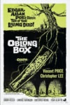 | 9 to 5
Year: 1981 Language: EN Format: mp4 Resolution: 720p |
| 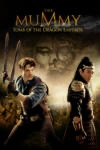 | 10 Rillington Place
Year: 1971 Language: EN Format: mp4 Resolution: 720p |
| 12 Angry Men
Year: 1957 Language: EN Format: mp4 Resolution: 720p |
| 12 Years a Slave
Year: 2014 Language: EN Format: mp4 Resolution: 1080p |
| 20,000 Leagues Under the Sea
Year: 1955 Language: EN Format: mp4 Resolution: 1080p |

| The 39 Steps
Year: 1935 Language: EN Format: mp4 Resolution: 720p |
| 45 Minutes from Hollywood
Year: 1926 Language: EN Format: mp4 Resolution: 576p |
| 55 Days at Peking
Year: 1963 Language: EN Format: mp4 Resolution: 1080p |
| 101 Dalmatians
Year: 1996 Language: EN Format: mp4 Resolution: 720p |
| 300
Year: 2007 Language: EN Format: mp4 Resolution: 1080p |

| The 300 Spartans
Year: 1962 Language: EN Format: mp4 Resolution: 720p |
| 300: Rise of an Empire
Year: 2014 Language: EN Format: mp4 Resolution: 1080p |
| 1898. Los últimos de Filipinas
Year: 2016 Language: ES Format: mp4 Resolution: 720p |
| 1941
Year: 1979 Language: EN Format: mp4 Resolution: 1080p |
| 1984
Year: 1956 Language: EN Format: mp4 Resolution: 480p |
| 2001: A Space Odyssey
Year: 1968 Language: EN Format: mp4 Resolution: 4K |
| 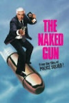 | 2001: A Space Travesty
Year: 2005 Language: EN Format: mp4 Resolution: 1080p |
| A Is for Acid
Year: 2002 Language: EN Format: mp4 Resolution: SD |
| A-Haunting We Will Go
Year: 1942 Language: EN Format: mp4 Resolution: 576p |

| Abbott and Costello Meet Dr. Jekyll and Mr. Hyde
Year: 1953 Language: EN Format: mp4 Resolution: 720p |
| Abbott and Costello Meet Frankenstein
Year: 1948 Language: EN Format: mp4 Resolution: 720p |
| 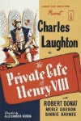 | Abbott and Costello Meet the Killer, Boris Karloff
Year: 1949 Language: EN Format: mp4 Resolution: 720p |
| 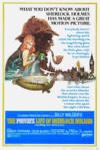 | Abbott and Costello Meet the Mummy
Year: 1955 Language: EN Format: mp4 Resolution: 720p |

| The Abominable Dr. Phibes
Year: 1971 Language: EN Format: mp4 Resolution: 720p |

| The Abominable Snowman
Year: 1957 Language: EN Format: mp4 Resolution: 1080p |
| Absolutely Fabulous: The Movie
Year: 2016 Language: EN Format: mp4 Resolution: 1080p |
| Absolution
Year: 1978 Language: EN Format: mp4 Resolution: 720p |

| The Addams Family
Year: 1991 Language: EN Format: mp4 Resolution: 1080p |

| The Addams Family
Year: 2019 Language: EN Format: mp4 Resolution: 1080p |

| The Addams Family 2
Year: 2021 Language: EN Format: mp4 Resolution: 1080p |
| Addams Family Values
Year: 1993 Language: EN Format: mp4 Resolution: 720p |

| The Adventures of Barry McKenzie
Year: 1972 Language: EN Format: mp4 Resolution: 1080p |

| The Adventures of Ichabod and Mr. Toad
Year: 1949 Language: EN Format: mp4 Resolution: 1080p |

| The Adventures of Robin Hood
Year: 1938 Language: EN Format: mp4 Resolution: 720p |

| The Adventures of Sherlock Holmes
Year: 1939 Language: EN Format: mp4 Resolution: 1080p |

| The Adventures of Tintin
Year: 2011 Language: EN Format: mp4 Resolution: 1080p |

| The African Queen
Year: 1952 Language: EN Format: mp4 Resolution: 720p |
| Agnes Browne
Year: 2000 Language: EN Format: mp4 Resolution: 1080p |

| The Agony and the Ecstasy
Year: 1965 Language: EN Format: mp4 Resolution: 1080p |
| Air Raid Wardens
Year: 1943 Language: EN Format: mp4 Resolution: 576p |
| Airplane II: The Sequel
Year: 1982 Language: EN Format: mp4 Resolution: 4K |
| Airplane!
Year: 1980 Language: EN Format: mp4 Resolution: 4K |

| Aladdin
Year: 1992 Language: EN Format: mp4 Resolution: 4K |
| Aladdin
Year: 2019 Language: EN Format: mp4 Resolution: 4K |
| 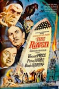 | Alexander
Year: 2005 Language: EN Format: mp4 Resolution: 1080p |

| Alexander the Great
Year: 1956 Language: EN Format: mp4 Resolution: 720p |
| Alfie
Year: 1966 Language: EN Format: mp4 Resolution: 720p |
| Alice in Wonderland
Year: 2010 Language: EN Format: mp4 Resolution: 1080p |
| Alice In Wonderland
Year: 1951 Language: EN Format: mp4 Resolution: 720p |
| Alice Through the Looking Glass
Year: 2016 Language: EN Format: mp4 Resolution: 1080p |
| 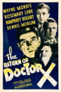 | Alive
Year: 1993 Language: EN Format: mp4 Resolution: 1080p |
| All About Eve
Year: 1950 Language: EN Format: mp4 Resolution: 720p |
| All Night Long
Year: 1981 Language: EN Format: mp4 Resolution: 1080p |
| 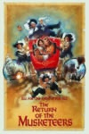 | All This, and Heaven Too
Year: 1940 Language: EN Format: mp4 Resolution: 480p |

| Allelujah
Year: 2022 Language: EN Format: mp4 Resolution: 1080p |
| Along Came Auntie
Year: 1926 Language: EN Format: mp4 Resolution: 576p |

| The Alphabet Murders
Year: 1966 Language: EN Format: mp4 Resolution: SD |
| 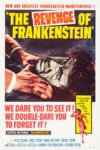 | Amadeus
Year: 1984 Language: EN Format: mp4 Resolution: 4K |
| Amazing Grace
Year: 2006 Language: EN Format: mp4 Resolution: 1080p |
| 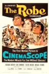 | American Graffiti
Year: 1973 Language: EN Format: mp4 Resolution: 720p |

| An American Tail
Year: 1986 Language: EN Format: mp4 Resolution: 720p |
| An American Tail: Fievel Goes West
Year: 1991 Language: EN Format: mp4 Resolution: 720p |
| 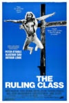 | An American Werewolf in London
Year: 1981 Language: EN Format: mp4 Resolution: 4K |
| Anastasia
Year: 1956 Language: EN Format: mp4 Resolution: 720p |
| Anastasia
Year: 1998 Language: EN Format: mp4 Resolution: 720p |
| And Now for Something Completely Different
Year: 1971 Language: EN Format: mp4 Resolution: 1080p |
| And Now the Screaming Starts!
Year: 1973 Language: EN Format: mp4 Resolution: 1080p |
| And Then There Were None
Year: 1945 Language: EN Format: mp4 Resolution: 720p |
| Angel
Year: 1937 Language: EN Format: mp4 Resolution: 480p |
| Angela's Ashes
Year: 1999 Language: EN Format: mp4 Resolution: 1080p |
| Angels & Demons
Year: 2009 Language: EN Format: mp4 Resolution: 1080p |
| Angora Love
Year: 1929 Language: EN Format: mp4 Resolution: 576p |

| The Anniversary
Year: 1968 Language: EN Format: mp4 Resolution: 1080p |
| Another Fine Mess
Year: 1930 Language: EN Format: mp4 Resolution: 576p |
| Another Man's Poison
Year: 1951 Language: EN Format: mp4 Resolution: 720p |
| Any Old Port!
Year: 1932 Language: EN Format: mp4 Resolution: 576p |
| Any Which Way You Can
Year: 1980 Language: EN Format: mp4 Resolution: 720p |

| The Ape
Year: 1940 Language: EN Format: mp4 Resolution: 1080p |

| The Ape Man
Year: 1943 Language: EN Format: mp4 Resolution: 720p |
| Apocalypto
Year: 2006 Language: EN Format: mp4 Resolution: 1080p |
| Appointment with Death
Year: 1988 Language: EN Format: mp4 Resolution: 480p |
| Arabian Adventure
Year: 1979 Language: EN Format: mp4 Resolution: 720p |
| Are You Being Served? The Movie
Year: 1977 Language: EN Format: mp4 Resolution: 1080p |
| Argentina, 1985
Year: 2022 Language: ES Format: mp4 Resolution: 1080p |

| The Aristocats
Year: 1971 Language: EN Format: mp4 Resolution: 720p |
| Around the World in 80 Days
Year: 2004 Language: EN Format: mp4 Resolution: 720p |
| 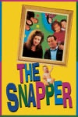 | Around the World in Eighty Days
Year: 1956 Language: EN Format: mp4 Resolution: 720p |
| 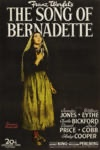 | Arsenic and Old Lace
Year: 1944 Language: EN Format: mp4 Resolution: 480p |
| Arthur
Year: 1981 Language: EN Format: mp4 Resolution: 1080p |
| Arthur 2: On the Rocks
Year: 1988 Language: EN Format: mp4 Resolution: 720p |

| Ask A Policeman
Year: 1939 Language: EN Format: mp4 Resolution: 720p |
| Asylum
Year: 1972 Language: EN Format: mp4 Resolution: 1080p |

| At the Earth's Core
Year: 1976 Language: EN Format: mp4 Resolution: 1080p |
| Austin Powers in Goldmember
Year: 2002 Language: EN Format: mp4 Resolution: 1080p |
| Austin Powers: International Man of Mystery
Year: 1997 Language: EN Format: mp4 Resolution: 1080p |
| Austin Powers: The Spy Who Shagged Me
Year: 1999 Language: EN Format: mp4 Resolution: 1080p |
| Avatar
Year: 2009 Language: EN Format: mp4 Resolution: 4K |

| The Awakening
Year: 1980 Language: EN Format: mp4 Resolution: 1080p |
| Babes in Toyland
Year: 1934 Language: EN Format: mp4 Resolution: 480p |
| 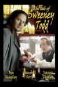 | Bacon Grabbers
Year: 1929 Language: EN Format: mp4 Resolution: 576p |
| Bambi
Year: 1942 Language: EN Format: mp4 Resolution: 720p |

| Barbarella
Year: 1968 Language: EN Format: mp4 Resolution: 1080p |

| The Bargee
Year: 1964 Language: EN Format: mp4 Resolution: 1080p |
| 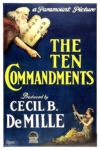 | Barnacle Bill
Year: 1957 Language: EN Format: mp4 Resolution: 1080p |
| Barry McKenzie Holds His Own
Year: 1974 Language: EN Format: mp4 Resolution: 576p |

| The Bat
Year: 1959 Language: EN Format: mp4 Resolution: 720p |
| *batteries not included
Year: 1988 Language: EN Format: mp4 Resolution: 720p |
| 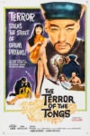 | Battle for the Planet of the Apes
Year: 1973 Language: EN Format: mp4 Resolution: 1080p |

| The Battle of the Century
Year: 1927 Language: EN Format: mp4 Resolution: 576p |

| The Battle of the River Plate
Year: 1956 Language: EN Format: mp4 Resolution: 720p |

| The Battle of the Sexes
Year: 1960 Language: EN Format: mp4 Resolution: 1080p |
| Be Big!
Year: 1931 Language: EN Format: mp4 Resolution: 576p |

| The Beast Must Die
Year: 1974 Language: EN Format: mp4 Resolution: 720p |

| The Beast with Five Fingers
Year: 1947 Language: EN Format: mp4 Resolution: 1080p |

| Beau Hunks
Year: 1931 Language: EN Format: mp4 Resolution: 576p |

| Beauty and the Beast
Year: 1991 Language: EN Format: mp4 Resolution: 4K |
| Beauty and the Beast
Year: 2017 Language: EN Format: mp4 Resolution: 4K |
| 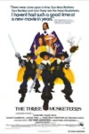 | Becket
Year: 1964 Language: EN Format: mp4 Resolution: 1080p |
| Bedknobs and Broomsticks
Year: 1971 Language: EN Format: mp4 Resolution: 1080p |

| Bedknobs and Broomsticks [Restored]
Year: 1971 Language: EN Format: mp4 Resolution: 720p |
| 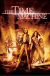 | Bedlam
Year: 1946 Language: EN Format: mp4 Resolution: 1080p |
| Before I Hang
Year: 1940 Language: EN Format: mp4 Resolution: 1080p |
| Behind That Curtain
Year: 1929 Language: EN Format: mp4 Resolution: 480p |
| 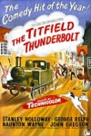 | Behind the Mask
Year: 1932 Language: EN Format: mp4 Resolution: 1080p |
| Belle of the Nineties
Year: 1934 Language: EN Format: mp4 Resolution: 1080p |

| The Belles of St. Trinian's
Year: 1954 Language: EN Format: mp4 Resolution: 720p |
| 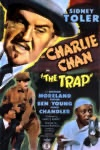 | Below Zero
Year: 1930 Language: EN Format: mp4 Resolution: 576p |
| Ben-Hur
Year: 1959 Language: EN Format: mp4 Resolution: 1080p |
| Ben-Hur
Year: 2016 Language: EN Format: mp4 Resolution: 1080p |
| Ben-Hur: A Tale of the Christ
Year: 1926 Language: EN Format: mp4 Resolution: SD |
| Beneath the Planet of the Apes
Year: 1970 Language: EN Format: mp4 Resolution: 1080p |
| Berth Marks
Year: 1929 Language: EN Format: mp4 Resolution: 576p |

| The Best Exotic Marigold Hotel
Year: 2011 Language: EN Format: mp4 Resolution: 720p |
| Beyond the Forest
Year: 1949 Language: EN Format: mp4 Resolution: 720p |

| The BFG
Year: 2016 Language: EN Format: mp4 Resolution: 1080p |
| Big Business
Year: 1929 Language: EN Format: mp4 Resolution: 576p |

| The Big Job
Year: 1965 Language: EN Format: mp4 Resolution: 1080p |

| The Big Noise
Year: 1944 Language: EN Format: mp4 Resolution: 576p |
| Bill & Ted Face the Music
Year: 2020 Language: EN Format: mp4 Resolution: 4K |
| Bill & Ted's Bogus Journey
Year: 1991 Language: EN Format: mp4 Resolution: 4K |
| Bill & Ted's Excellent Adventure
Year: 1989 Language: EN Format: mp4 Resolution: 4K |
| 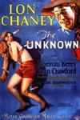 | Billy Elliot
Year: 2000 Language: EN Format: mp4 Resolution: 720p |
| Birdman of Alcatraz
Year: 1962 Language: EN Format: mp4 Resolution: 1080p |

| The Birds
Year: 1963 Language: EN Format: mp4 Resolution: 1080p |

| The Black Camel
Year: 1931 Language: EN Format: mp4 Resolution: 480p |

| The Black Castle
Year: 1952 Language: EN Format: mp4 Resolution: 720p |

| The Black Cat
Year: 1934 Language: EN Format: mp4 Resolution: 1080p |

| The Black Cat
Year: 1941 Language: EN Format: mp4 Resolution: 720p |

| The Black Cauldron
Year: 1985 Language: EN Format: mp4 Resolution: 720p |
| 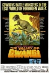 | Black Friday
Year: 1940 Language: EN Format: mp4 Resolution: 720p |
| Black Magic
Year: 1944 Language: EN Format: mp4 Resolution: 480p |
| Black Narcissus
Year: 1947 Language: EN Format: mp4 Resolution: 720p |

| The Black Room
Year: 1935 Language: EN Format: mp4 Resolution: 1080p |
| Black Sabbath
Year: 1963 Language: EN Format: mp4 Resolution: 720p |
| Black Sheep
Year: 2006 Language: EN Format: mp4 Resolution: 1080p |

| The Black Sheep of Whitehall
Year: 1942 Language: EN Format: mp4 Resolution: 720p |

| The Black Sleep
Year: 1956 Language: EN Format: mp4 Resolution: 1080p |
| Blackbeard's Ghost
Year: 1968 Language: EN Format: mp4 Resolution: 720p |

| Der blaue Engel
Year: 1930 Language: DE Format: mp4 Resolution: 720p |
| Blazing Saddles
Year: 1974 Language: EN Format: mp4 Resolution: 4K |
| 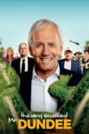 | Bless This House
Year: 1972 Language: EN Format: mp4 Resolution: 480p |
| Blithe Spirit
Year: 1945 Language: EN Format: mp4 Resolution: 720p |
| Blithe Spirit
Year: 2021 Language: EN Format: mp4 Resolution: 1080p |
| Block-Heads
Year: 1938 Language: EN Format: mp4 Resolution: 576p |
| Blonde Venus
Year: 1932 Language: EN Format: mp4 Resolution: 720p |

| The Blood Beast Terror
Year: 1968 Language: EN Format: mp4 Resolution: 720p |
| Blood from the Mummy's Tomb
Year: 1971 Language: EN Format: mp4 Resolution: 1080p |

| The Blood of Fu Manchu
Year: 1968 Language: EN Format: mp4 Resolution: 4K |
| Blood of the Vampire
Year: 1958 Language: EN Format: mp4 Resolution: 1080p |

| The Blood on Satan's Claw
Year: 1971 Language: EN Format: mp4 Resolution: 720p |

| The Bloody Judge
Year: 1970 Language: EN Format: mp4 Resolution: 1080p |
| 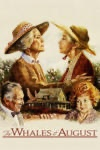 | Blotto
Year: 1930 Language: EN Format: mp4 Resolution: 576p |
| The Blue Angel
Year: 1930 Language: EN Format: mp4 Resolution: 1080p |

| The Blue Lamp
Year: 1950 Language: EN Format: mp4 Resolution: 720p |
| 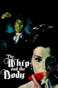 | Blue Murder at St. Trinian's
Year: 1957 Language: EN Format: mp4 Resolution: 720p |

| The Boat That Rocked
Year: 2009 Language: EN Format: mp4 Resolution: 720p |

| The Body Snatcher
Year: 1945 Language: EN Format: mp4 Resolution: 720p |

| The Bohemian Girl
Year: 1936 Language: EN Format: mp4 Resolution: 576p |
| Bohemian Rhapsody
Year: 2018 Language: EN Format: mp4 Resolution: 4K |

| Bonnie and Clyde
Year: 1967 Language: EN Format: mp4 Resolution: 720p |

| Bonnie Scotland
Year: 1935 Language: EN Format: mp4 Resolution: 480p |

| The Boogie Man Will Get You
Year: 1942 Language: EN Format: mp4 Resolution: 1080p |
| Boogie Nights
Year: 1998 Language: EN Format: mp4 Resolution: 1080p |

| Das Boot
Year: 1998 Language: EN Format: mp4 Resolution: 1080p |
| Born Free
Year: 1966 Language: EN Format: mp4 Resolution: 720p |
| Bottoms Up!
Year: 1960 Language: EN Format: mp4 Resolution: 720p |

| The Bounty
Year: 1984 Language: EN Format: mp4 Resolution: 720p |

| The Boy in the Striped Pyjamas
Year: 2008 Language: EN Format: mp4 Resolution: 1080p |
| Boy on a Dolphin
Year: 1957 Language: EN Format: mp4 Resolution: 720p |

| The Boys from Brazil
Year: 1978 Language: EN Format: mp4 Resolution: 720p |
| Boys Will Be Boys
Year: 1935 Language: EN Format: mp4 Resolution: 720p |
| Braking for Whales
Year: 2019 Language: EN Format: mp4 Resolution: 720p |
| Brassed Off
Year: 1996 Language: EN Format: mp4 Resolution: 720p |
| Brats
Year: 1930 Language: EN Format: mp4 Resolution: 576p |

| Brats [Original 1930 Version]
Year: 1930 Language: EN Format: mp4 Resolution: 576p |
| Braveheart
Year: 1995 Language: EN Format: mp4 Resolution: 1080p |
| Breakfast at Tiffany's
Year: 1961 Language: EN Format: mp4 Resolution: 1080p |
| The Bride of Frankenstein
Year: 1935 Language: EN Format: mp4 Resolution: 4K |
| 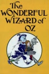 | Bride of the Monster
Year: 1955 Language: EN Format: mp4 Resolution: 480p |

| The Brides of Dracula
Year: 1960 Language: EN Format: mp4 Resolution: 720p |

| The Brides of Fu Manchu
Year: 1966 Language: EN Format: mp4 Resolution: 1080p |

| The Bridge on the River Kwai
Year: 1957 Language: EN Format: mp4 Resolution: 4K |
| Brief Encounter
Year: 1945 Language: EN Format: mp4 Resolution: 720p |
| Brighton Rock
Year: 1948 Language: EN Format: mp4 Resolution: 720p |
| Brighton Rock
Year: 2010 Language: EN Format: mp4 Resolution: 1080p |
| 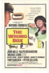 | Brother Bear
Year: 2003 Language: EN Format: mp4 Resolution: 720p |

| The Brute Man
Year: 1946 Language: EN Format: mp4 Resolution: 480p |

| The Bullfighters
Year: 1945 Language: EN Format: mp4 Resolution: 576p |
| Burke & Hare
Year: 1972 Language: EN Format: mp4 Resolution: 720p |
| Burke & Hare
Year: 2010 Language: EN Format: mp4 Resolution: 720p |
| Bus Stop
Year: 1956 Language: EN Format: mp4 Resolution: 1080p |
| Buster
Year: 1988 Language: EN Format: mp4 Resolution: 720p |
| Busy Bodies
Year: 1933 Language: EN Format: mp4 Resolution: 576p |

| La cabalgata del circo
Year: 1945 Language: ES Format: mp4 Resolution: 720p |

| Das Cabinet des Dr. Caligari
Year: 1922 Language: DE Format: mp4 Resolution: 1080p |

| The Caine Mutiny
Year: 1954 Language: EN Format: mp4 Resolution: 720p |
| Calendar Girls
Year: 2003 Language: EN Format: mp4 Resolution: 720p |
| California Suite
Year: 1978 Language: EN Format: mp4 Resolution: 1080p |

| Caligula
Year: 1979 Language: EN Format: mp4 Resolution: 720p |
| 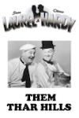 | Caligula
Year: 1979 Language: EN Format: mp4 Resolution: 4K |
| 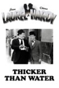 | Call of the Cuckoo
Year: 1927 Language: EN Format: mp4 Resolution: 576p |
| Callas Forever
Year: 2002 Language: EN Format: mp4 Resolution: 480p |
| 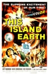 | Calvary
Year: 2014 Language: EN Format: mp4 Resolution: 1080p |

| The Canterville Ghost
Year: 1944 Language: EN Format: mp4 Resolution: 480p |

| The Canterville Ghost
Year: 1996 Language: EN Format: mp4 Resolution: 1080p |
| Capote
Year: 2005 Language: EN Format: mp4 Resolution: 720p |

| Captain Clegg
Year: 1962 Language: EN Format: mp4 Resolution: 720p |
| Captain Kronos: Vampire Hunter
Year: 1974 Language: EN Format: mp4 Resolution: 720p |
| 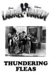 | Captain Nemo and the Underwater City
Year: 1969 Language: EN Format: mp4 Resolution: 1080p |

| The Captain's Paradise
Year: 1953 Language: EN Format: mp4 Resolution: 1080p |

| The Card
Year: 1952 Language: EN Format: mp4 Resolution: 480p |
| 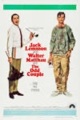 | A Caribbean Mystery
Year: 1983 Language: EN Format: mp4 Resolution: 480p |
| Carlton-Browne Of The F.O.
Year: 1959 Language: EN Format: mp4 Resolution: 480p |
| Carrie
Year: 1976 Language: EN Format: mp4 Resolution: 4K |
| Carry On Abroad
Year: 1972 Language: EN Format: mp4 Resolution: 720p |
| Carry On Again Doctor
Year: 1969 Language: EN Format: mp4 Resolution: 720p |
| 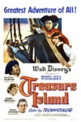 | Carry On at Your Convenience
Year: 1971 Language: EN Format: mp4 Resolution: 720p |
| Carry On Behind
Year: 1975 Language: EN Format: mp4 Resolution: 720p |
| Carry On Cabby
Year: 1963 Language: EN Format: mp4 Resolution: 720p |
| 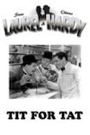 | Carry On Camping
Year: 1969 Language: EN Format: mp4 Resolution: 720p |
| Carry On Cleo
Year: 1964 Language: EN Format: mp4 Resolution: 720p |
| Carry On Columbus
Year: 1992 Language: EN Format: mp4 Resolution: 720p |
| Carry On Constable
Year: 1960 Language: EN Format: mp4 Resolution: 720p |
| Carry On Cowboy
Year: 1965 Language: EN Format: mp4 Resolution: 1080p |
| Carry On Cruising
Year: 1962 Language: EN Format: mp4 Resolution: 720p |

| Carry On Dick
Year: 1974 Language: EN Format: mp4 Resolution: 720p |
| Carry On Doctor
Year: 1967 Language: EN Format: mp4 Resolution: 720p |
| Carry On Don't Lose Your Head
Year: 1966 Language: EN Format: mp4 Resolution: 720p |
| Carry On Emmannuelle
Year: 2002 Language: EN Format: mp4 Resolution: 720p |
| Carry On England
Year: 1976 Language: EN Format: mp4 Resolution: 720p |

| Carry On England
Year: 1976 Language: EN Format: mp4 Resolution: 576p |
| Carry on Follow That Camel
Year: 1967 Language: EN Format: mp4 Resolution: 720p |
| Carry On Girls
Year: 1973 Language: EN Format: mp4 Resolution: 720p |
| 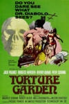 | Carry On Henry
Year: 1971 Language: EN Format: mp4 Resolution: 720p |
| Carry On Jack
Year: 1964 Language: EN Format: mp4 Resolution: 1080p |
| 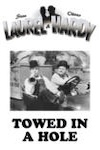 | Carry On Loving
Year: 1970 Language: EN Format: mp4 Resolution: 720p |
| 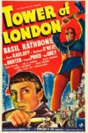 | Carry On Matron
Year: 1972 Language: EN Format: mp4 Resolution: 720p |
| 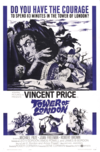 | Carry On Nurse
Year: 1959 Language: EN Format: mp4 Resolution: 720p |
| Carry On Regardless
Year: 1961 Language: EN Format: mp4 Resolution: 720p |
| Carry On Screaming!
Year: 1966 Language: EN Format: mp4 Resolution: 720p |
| Carry On Sergeant
Year: 1958 Language: EN Format: mp4 Resolution: 720p |
| 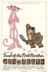 | Carry On Spying
Year: 1964 Language: EN Format: mp4 Resolution: 720p |
| Carry On Teacher
Year: 1959 Language: EN Format: mp4 Resolution: 720p |

| Carry On Up the Jungle
Year: 1970 Language: EN Format: mp4 Resolution: 720p |
| Carry On... Up the Khyber
Year: 1968 Language: EN Format: mp4 Resolution: 720p |
| 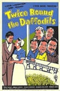 | Casablanca
Year: 1942 Language: EN Format: mp4 Resolution: 4K |

| The Case of the Whitechapel Vampire
Year: 2002 Language: EN Format: mp4 Resolution: 720p |
| Cash on Demand
Year: 1963 Language: EN Format: mp4 Resolution: 720p |
| 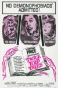 | Casino Royale
Year: 1954 Language: EN Format: mp4 Resolution: 480p |

| Casino Royale
Year: 1967 Language: EN Format: mp4 Resolution: 1080p |
| Casino Royale
Year: 2006 Language: EN Format: mp4 Resolution: 4K |
| 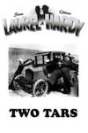 | Castle in the Desert
Year: 1942 Language: EN Format: mp4 Resolution: 480p |

| The Castle of Fu Manchu
Year: 1969 Language: EN Format: mp4 Resolution: 4K |

| Castle Of The Living Dead
Year: 1964 Language: EN Format: mp4 Resolution: 1080p |

| The Cat and the Canary
Year: 1927 Language: EN Format: mp4 Resolution: 480p |

| The Cat and the Canary
Year: 1939 Language: EN Format: mp4 Resolution: 1080p |

| The Cat and the Canary
Year: 1978 Language: EN Format: mp4 Resolution: 1080p |
| Cat Ballou
Year: 1965 Language: EN Format: mp4 Resolution: 1080p |

| Cat on a Hot Tin Roof
Year: 1958 Language: EN Format: mp4 Resolution: 720p |
| Catch Me If You Can
Year: 2002 Language: EN Format: mp4 Resolution: 1080p |

| The Catered Affair
Year: 1956 Language: EN Format: mp4 Resolution: 1080p |
| Champagne Charlie
Year: 1944 Language: EN Format: mp4 Resolution: 720p |
| Chandu the Magician
Year: 1932 Language: EN Format: mp4 Resolution: 1080p |
| Charlie and the Chocolate Factory
Year: 2005 Language: EN Format: mp4 Resolution: 1080p |
| Charlie Chan and the Curse of the Dragon Queen
Year: 1981 Language: EN Format: mp4 Resolution: 1080p |
| Charlie Chan at Monte Carlo
Year: 1937 Language: EN Format: mp4 Resolution: 480p |
| Charlie Chan at the Circus
Year: 1936 Language: EN Format: mp4 Resolution: 480p |

| Charlie Chan at the Olympics
Year: 1937 Language: EN Format: mp4 Resolution: 480p |
| Charlie Chan at the Opera
Year: 1936 Language: EN Format: mp4 Resolution: 480p |
| Charlie Chan at the Race Track
Year: 1936 Language: EN Format: mp4 Resolution: 480p |
| Charlie Chan at the Wax Museum
Year: 1940 Language: EN Format: mp4 Resolution: 480p |
| Charlie Chan at Treasure Island
Year: 1939 Language: EN Format: mp4 Resolution: 480p |
| Charlie Chan in Dangerous Money
Year: 1946 Language: EN Format: mp4 Resolution: 480p |
| Charlie Chan in Egypt
Year: 1935 Language: EN Format: mp4 Resolution: 480p |
| Charlie Chan in Honolulu
Year: 1938 Language: EN Format: mp4 Resolution: 480p |
| Charlie Chan in London
Year: 1934 Language: EN Format: mp4 Resolution: 480p |
| Charlie Chan in Panama
Year: 1940 Language: EN Format: mp4 Resolution: 480p |

| Charlie Chan in Paris
Year: 1935 Language: EN Format: mp4 Resolution: 480p |
| Charlie Chan in Reno
Year: 1939 Language: EN Format: mp4 Resolution: 480p |
| Charlie Chan in Rio
Year: 1941 Language: EN Format: mp4 Resolution: 480p |
| Charlie Chan in Shanghai
Year: 1935 Language: EN Format: mp4 Resolution: 480p |
| Charlie Chan in the Secret Service
Year: 1944 Language: EN Format: mp4 Resolution: 480p |
| Charlie Chan on Broadway
Year: 1937 Language: EN Format: mp4 Resolution: 480p |
| Charlie Chan's Courage
Year: 1934 Language: EN Format: mp4 Resolution: 480p |
| Charlie Chan's Murder Cruise
Year: 1940 Language: EN Format: mp4 Resolution: 480p |
| Charlie Chan's Secret
Year: 1936 Language: EN Format: mp4 Resolution: 480p |
| 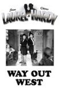 | Che: Part One
Year: 2008 Language: EN Format: mp4 Resolution: 720p |
| Che: Part Two
Year: 2009 Language: EN Format: mp4 Resolution: 720p |

| Che!
Year: 1969 Language: EN Format: mp4 Resolution: 1080p |
| Chicken Run
Year: 2000 Language: EN Format: mp4 Resolution: 720p |
| Chickens Come Home
Year: 1931 Language: EN Format: mp4 Resolution: 576p |
| A Child Is Waiting
Year: 1963 Language: EN Format: mp4 Resolution: 720p |

| The Chimp
Year: 1932 Language: EN Format: mp4 Resolution: 576p |

| The Chinese Cat
Year: 1944 Language: EN Format: mp4 Resolution: 480p |

| The Chinese Ring
Year: 1947 Language: EN Format: mp4 Resolution: 480p |
| Chitty Chitty Bang Bang
Year: 1968 Language: EN Format: mp4 Resolution: 720p |

| The Chronicles of Narnia: Prince Caspian
Year: 2008 Language: EN Format: mp4 Resolution: 1080p |

| The Chronicles of Narnia: The Lion, the Witch and the Wardrobe
Year: 2005 Language: EN Format: mp4 Resolution: 1080p |

| The Chronicles of Narnia: The Voyage of the Dawn Treader
Year: 2010 Language: EN Format: mp4 Resolution: 1080p |
| 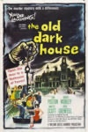 | A Chump at Oxford
Year: 1940 Language: EN Format: mp4 Resolution: 576p |
| Cinderella
Year: 1950 Language: EN Format: mp4 Resolution: 4K |

| Cinderella
Year: 2015 Language: EN Format: mp4 Resolution: 4K |
| Circus of Horrors
Year: 1960 Language: EN Format: mp4 Resolution: 1080p |
| Citizen Kane
Year: 1942 Language: EN Format: mp4 Resolution: 720p |
| 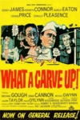 | City Beneath the Sea
Year: 1953 Language: EN Format: mp4 Resolution: 1080p |
| 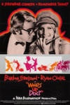 | City in Darkness
Year: 1939 Language: EN Format: mp4 Resolution: 480p |

| The City of the Dead
Year: 1960 Language: EN Format: mp4 Resolution: 1080p |
| Clash of the Titans
Year: 2010 Language: EN Format: mp4 Resolution: 4K |
| Clash Of The Titans
Year: 1981 Language: EN Format: mp4 Resolution: 720p |
| Cleopatra
Year: 1934 Language: EN Format: mp4 Resolution: 720p |
| Cleopatra
Year: 1963 Language: EN Format: mp4 Resolution: 720p |

| The Climax
Year: 1944 Language: EN Format: mp4 Resolution: 1080p |

| The Clinic
Year: 1983 Language: EN Format: mp4 Resolution: 480p |

| Clockwise
Year: 1986 Language: EN Format: mp4 Resolution: 720p |
| A Clockwork Orange
Year: 1972 Language: EN Format: mp4 Resolution: 720p |
| Close Encounters of the Third Kind
Year: 1977 Language: EN Format: mp4 Resolution: 4K |
| A Close Shave
Year: 1995 Language: EN Format: mp4 Resolution: 1080p |
| Clue
Year: 1985 Language: EN Format: mp4 Resolution: 4K |

| Coco
Year: 2017 Language: EN Format: mp4 Resolution: 4K |
| Cocoon
Year: 1985 Language: EN Format: mp4 Resolution: 1080p |
| 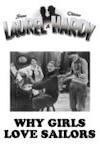 | Cocoon: The Return
Year: 1989 Language: EN Format: mp4 Resolution: 1080p |

| The Color Purple
Year: 1985 Language: EN Format: mp4 Resolution: 720p |
| 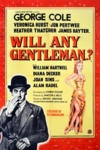 | Come Clean
Year: 1931 Language: EN Format: mp4 Resolution: 576p |

| The Comedy of Terrors
Year: 1964 Language: EN Format: mp4 Resolution: 720p |

| The Commitments
Year: 1991 Language: EN Format: mp4 Resolution: 720p |
| 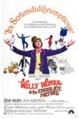 | Compulsion
Year: 1959 Language: EN Format: mp4 Resolution: 720p |

| Conan the Barbarian
Year: 1982 Language: EN Format: mp4 Resolution: 1080p |
| Conan the Barbarian [Extended Edition]
Year: 1982 Language: EN Format: mp4 Resolution: 4K |
| Conclave
Year: 2024 Language: EN Format: mp4 Resolution: 1080p |
| 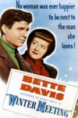 | Connie and Carla
Year: 2004 Language: EN Format: mp4 Resolution: 1080p |
| Conquest Of The Planet Of The Apes
Year: 1972 Language: EN Format: mp4 Resolution: 1080p |
| Convict 99
Year: 1938 Language: EN Format: mp4 Resolution: 720p |
| Cool Runnings
Year: 1994 Language: EN Format: mp4 Resolution: 720p |
| Cor, Blimey!
Year: 2000 Language: EN Format: mp4 Resolution: SD |

| The Corn Is Green
Year: 1945 Language: EN Format: mp4 Resolution: SD |

| The Corn Is Green
Year: 1979 Language: EN Format: mp4 Resolution: 480p |

| The Corpse Vanishes
Year: 1942 Language: EN Format: mp4 Resolution: 720p |
| Corridors of Blood
Year: 1958 Language: EN Format: mp4 Resolution: 720p |
| Corruption
Year: 1968 Language: EN Format: mp4 Resolution: 720p |
| Cottage to Let
Year: 1941 Language: EN Format: mp4 Resolution: 1080p |
| Count Dracula
Year: 1970 Language: EN Format: mp4 Resolution: 1080p |
| Count Dracula
Year: 1977 Language: EN Format: mp4 Resolution: 480p |
| Countess Dracula
Year: 1971 Language: EN Format: mp4 Resolution: 1080p |
| County Hospital
Year: 1932 Language: EN Format: mp4 Resolution: 576p |
| Crazy Rich Asians
Year: 2018 Language: EN Format: mp4 Resolution: 4K |
| Creature from the Black Lagoon
Year: 1954 Language: EN Format: mp4 Resolution: 1080p |

| The Creature Walks Among Us
Year: 1956 Language: EN Format: mp4 Resolution: 1080p |
| Creatures the World Forgot
Year: 1971 Language: EN Format: mp4 Resolution: 1080p |

| The Creeping Flesh
Year: 1973 Language: EN Format: mp4 Resolution: 720p |
| Crescendo
Year: 1970 Language: EN Format: mp4 Resolution: SD |
| Crocodile Dundee
Year: 1986 Language: EN Format: mp4 Resolution: 1080p |
| Crocodile Dundee II
Year: 1988 Language: EN Format: mp4 Resolution: 1080p |
| Cromwell
Year: 1970 Language: EN Format: mp4 Resolution: 1080p |
| Crooked House
Year: 2017 Language: EN Format: mp4 Resolution: 1080p |
| Crooks Anonymous
Year: 1962 Language: EN Format: mp4 Resolution: SD |

| Crooks in Cloisters
Year: 1964 Language: EN Format: mp4 Resolution: 1080p |
| Cry of the Banshee
Year: 1970 Language: EN Format: mp4 Resolution: 1080p |
| Cry of the Werewolf
Year: 1944 Language: EN Format: mp4 Resolution: 1080p |

| The Curse of Frankenstein
Year: 1957 Language: EN Format: mp4 Resolution: 4K |

| The Curse of the Mummy's Tomb
Year: 1964 Language: EN Format: mp4 Resolution: 720p |

| The Curse of the Werewolf
Year: 1961 Language: EN Format: mp4 Resolution: 720p |
| Cyrano de Bergerac
Year: 1950 Language: EN Format: mp4 Resolution: 1080p |
| Cyrano de Bergerac
Year: 1991 Language: EN Format: mp4 Resolution: 1080p |

| The Da Vinci Code
Year: 2006 Language: EN Format: mp4 Resolution: 1080p |
| Dad's Army
Year: 1971 Language: EN Format: mp4 Resolution: 720p |

| Dad's Army
Year: 2016 Language: EN Format: mp4 Resolution: 1080p |
| Daleks' Invasion Earth: 2150 A.D.
Year: 1966 Language: EN Format: mp4 Resolution: 1080p |

| The Dam Busters
Year: 1955 Language: EN Format: mp4 Resolution: 720p |
| Damien: Omen II
Year: 1979 Language: EN Format: mp4 Resolution: 720p |

| The Damned
Year: 1963 Language: EN Format: mp4 Resolution: 1080p |
| Dance Of The Vampires
Year: 1968 Language: EN Format: mp4 Resolution: 1080p |

| Dance Of The Vampires [Alternate Cut]
Year: 1968 Language: EN Format: mp4 Resolution: 720p |
| Dance with a Stranger
Year: 1985 Language: EN Format: mp4 Resolution: 1080p |

| The Dancing Masters
Year: 1943 Language: EN Format: mp4 Resolution: 576p |

| Dandy Dick
Year: 1935 Language: EN Format: mp4 Resolution: 480p |
| Dangerous
Year: 1935 Language: EN Format: mp4 Resolution: 1080p |

| The Danish Girl
Year: 2015 Language: EN Format: mp4 Resolution: 1080p |
| Dark Alibi
Year: 1946 Language: EN Format: mp4 Resolution: 480p |

| The Dark Eyes of London
Year: 1939 Language: EN Format: mp4 Resolution: 720p |

| Dark Victory
Year: 1939 Language: EN Format: mp4 Resolution: 720p |

| Darkest Hour
Year: 2017 Language: EN Format: mp4 Resolution: 4K |

| Daughter of the Dragon
Year: 1931 Language: EN Format: mp4 Resolution: 1080p |
| Dawn of the Planet of the Apes
Year: 2014 Language: EN Format: mp4 Resolution: 4K |

| The Day After Tomorrow
Year: 2004 Language: EN Format: mp4 Resolution: 1080p |

| The Day of the Triffids
Year: 1963 Language: EN Format: mp4 Resolution: SD |

| The Day the Earth Caught Fire
Year: 1961 Language: EN Format: mp4 Resolution: 720p |

| The Day the Earth Stood Still
Year: 1951 Language: EN Format: mp4 Resolution: 1080p |
| Dead Man's Folly
Year: 1986 Language: EN Format: mp4 Resolution: 720p |
| Dead Men Tell
Year: 1941 Language: EN Format: mp4 Resolution: 480p |

| Dead of Night
Year: 1945 Language: EN Format: mp4 Resolution: 720p |
| Dead Ringer
Year: 1964 Language: EN Format: mp4 Resolution: 1080p |

| The Deal
Year: 2003 Language: EN Format: mp4 Resolution: SD |
| Death on the Nile
Year: 1978 Language: EN Format: mp4 Resolution: 1080p |

| Death on the Nile
Year: 2022 Language: EN Format: mp4 Resolution: 1080p |
| Deception
Year: 1946 Language: EN Format: mp4 Resolution: 720p |

| The Deer Hunter
Year: 1978 Language: EN Format: mp4 Resolution: 4K |
| Demons of the Mind
Year: 1972 Language: EN Format: mp4 Resolution: 1080p |
| Dennis the Menace
Year: 1993 Language: EN Format: mp4 Resolution: 1080p |
| Dentist on the Job
Year: 1961 Language: EN Format: mp4 Resolution: 1080p |
| Desire
Year: 1936 Language: EN Format: mp4 Resolution: 1080p |

| Desperado
Year: 1996 Language: EN Format: mp4 Resolution: 1080p |
| Despicable Me
Year: 2010 Language: EN Format: mp4 Resolution: 1080p |
| Despicable Me 2
Year: 2013 Language: EN Format: mp4 Resolution: 1080p |
| Destry Rides Again
Year: 1939 Language: EN Format: mp4 Resolution: 720p |

| Det sjunde inseglet
Year: 1957 Language: EN Format: mp4 Resolution: 1080p |

| The Devil Bat
Year: 1940 Language: EN Format: mp4 Resolution: 480p |

| The Devil Commands
Year: 1941 Language: EN Format: mp4 Resolution: 1080p |

| The Devil Is a Woman
Year: 1935 Language: EN Format: mp4 Resolution: 1080p |

| The Devil Rides Out
Year: 1968 Language: EN Format: mp4 Resolution: 1080p |

| The Devil-Doll
Year: 1936 Language: EN Format: mp4 Resolution: 1080p |

| The Devil-Ship Pirates
Year: 1964 Language: EN Format: mp4 Resolution: 1080p |

| The Devil's Men
Year: 1976 Language: EN Format: mp4 Resolution: 1080p |
| Dial M for Murder
Year: 1954 Language: EN Format: mp4 Resolution: 1080p |

| Diamonds Are Forever
Year: 1971 Language: EN Format: mp4 Resolution: 4K |
| Diarios de motocicleta
Year: 2004 Language: EN Format: mp4 Resolution: 720p |
| Diary of a Madman
Year: 1963 Language: EN Format: mp4 Resolution: 1080p |
| Die Another Day
Year: 2002 Language: EN Format: mp4 Resolution: 4K |
| Die, Monster, Die!
Year: 1965 Language: EN Format: mp4 Resolution: 1080p |
| Dirty Work
Year: 1933 Language: EN Format: mp4 Resolution: 576p |
| Dishonored
Year: 1931 Language: EN Format: mp4 Resolution: 720p |
| Do Detectives Think?
Year: 1927 Language: EN Format: mp4 Resolution: 576p |
| Docks of New Orleans
Year: 1948 Language: EN Format: mp4 Resolution: 480p |

| The Doctor and the Devils
Year: 1985 Language: EN Format: mp4 Resolution: 1080p |
| Doctor at Large
Year: 1957 Language: EN Format: mp4 Resolution: SD |

| Doctor at Sea
Year: 1955 Language: EN Format: mp4 Resolution: 576p |
| Doctor in Clover
Year: 1966 Language: EN Format: mp4 Resolution: 480p |
| Doctor in Distress
Year: 1963 Language: EN Format: mp4 Resolution: SD |
| Doctor in Love
Year: 1960 Language: EN Format: mp4 Resolution: SD |
| Doctor in the House
Year: 1954 Language: EN Format: mp4 Resolution: 576p |
| Doctor in Trouble (1970)
Year: 2012 Language: EN Format: mp4 Resolution: SD |
| Doctor Syn
Year: 1937 Language: EN Format: mp4 Resolution: 480p |
| Doctor X
Year: 1932 Language: EN Format: mp4 Resolution: 1080p |
| Doctor Zhivago
Year: 1965 Language: EN Format: mp4 Resolution: 1080p |

| Dolittle
Year: 2020 Language: EN Format: mp4 Resolution: 4K |

| Don Juan DeMarco
Year: 1994 Language: EN Format: mp4 Resolution: 1080p |
| Don't Bother to Knock
Year: 1952 Language: EN Format: mp4 Resolution: 720p |

| Dorian Gray
Year: 2009 Language: EN Format: mp4 Resolution: 1080p |
| Double Whoopee
Year: 1929 Language: EN Format: mp4 Resolution: 576p |

| Dr Jekyll & Sister Hyde
Year: 1971 Language: EN Format: mp4 Resolution: 720p |

| Dr. Crippen
Year: 1963 Language: EN Format: mp4 Resolution: 1080p |

| Dr. Jekyll and Mr. Hyde
Year: 1931 Language: EN Format: mp4 Resolution: 480p |

| Dr. Jekyll and Mr. Hyde
Year: 1941 Language: EN Format: mp4 Resolution: 480p |

| Dr. No
Year: 1962 Language: EN Format: mp4 Resolution: 4K |

| Dr. Phibes Rises Again
Year: 1972 Language: EN Format: mp4 Resolution: 1080p |
| Dr. Strangelove Or: How I Learned To Stop Worrying And Love The Bomb
Year: 1964 Language: EN Format: mp4 Resolution: 720p |
| Dr. Syn, Alias the Scarecrow
Year: 1963 Language: EN Format: mp4 Resolution: SD |
| Dr. Terror's House of Horrors
Year: 1965 Language: EN Format: mp4 Resolution: 720p |

| Dr. Who and the Daleks
Year: 1965 Language: EN Format: mp4 Resolution: 1080p |

| Drácula
Year: 1931 Language: EN Format: mp4 Resolution: 4K |

| Dracula
Year: 1958 Language: EN Format: mp4 Resolution: SD |
| Dracula [Restored]
Year: 1958 Language: EN Format: mp4 Resolution: 1080p |
| Dracula
Year: 1974 Language: EN Format: mp4 Resolution: 1080p |
| Dracula
Year: 1979 Language: EN Format: mp4 Resolution: 1080p |
| Dracula
Year: 1992 Language: EN Format: mp4 Resolution: 4K |

| Drácula
Year: 1931 Language: ES Format: mp4 Resolution: 1080p |
| Dracula A.D. 1972
Year: 1972 Language: EN Format: mp4 Resolution: 720p |
| Dracula Has Risen from the Grave
Year: 1968 Language: EN Format: mp4 Resolution: 1080p |
| Dracula Untold
Year: 2014 Language: EN Format: mp4 Resolution: 4K |
| Dracula: A Love Tale
Year: 2025 Language: EN Format: mp4 Resolution: 4K |
| Dracula: Dead And Loving It
Year: 1995 Language: EN Format: mp4 Resolution: 720p |
| Dracula: Prince of Darkness
Year: 1966 Language: EN Format: mp4 Resolution: 720p |

| Dracula's Daughter
Year: 1936 Language: EN Format: mp4 Resolution: 480p |
| Dressed to Kill
Year: 1946 Language: EN Format: mp4 Resolution: 1080p |

| The Dresser
Year: 1983 Language: EN Format: mp4 Resolution: 720p |

| The Dresser
Year: 2015 Language: EN Format: mp4 Resolution: 1080p |
| Driving Miss Daisy
Year: 1990 Language: EN Format: mp4 Resolution: 720p |

| Duck Soup
Year: 1927 Language: EN Format: mp4 Resolution: 576p |

| Dumbo
Year: 1941 Language: EN Format: mp4 Resolution: 720p |

| Dunkirk
Year: 1958 Language: EN Format: mp4 Resolution: 720p |

| Dunkirk
Year: 2017 Language: EN Format: mp4 Resolution: 4K |

| E.T. the Extra-Terrestrial
Year: 1982 Language: EN Format: mp4 Resolution: 720p |

| Early To Bed
Year: 1928 Language: EN Format: mp4 Resolution: 576p |

| Earth vs. the Flying Saucers
Year: 2008 Language: EN Format: mp4 Resolution: 720p |

| East Is East
Year: 1999 Language: EN Format: mp4 Resolution: 720p |

| East of Eden
Year: 1955 Language: EN Format: mp4 Resolution: 1080p |

| Ed Wood
Year: 1994 Language: EN Format: mp4 Resolution: 720p |

| Eddie the Eagle
Year: 2016 Language: EN Format: mp4 Resolution: 4K |

| Édith et Marcel
Year: 1983 Language: FR Format: mp4 Resolution: 576p |

| Educating Rita
Year: 1983 Language: EN Format: mp4 Resolution: 720p |

| El abrazo de la serpiente
Year: 2016 Language: EN Format: mp4 Resolution: 1080p |

| El Cid
Year: 1961 Language: EN Format: mp4 Resolution: 1080p |

| El Mariachi
Year: 1993 Language: EN Format: mp4 Resolution: 720p |

| The Elephant Man
Year: 1980 Language: EN Format: mp4 Resolution: 4K |

| The Emperor's New Groove
Year: 2001 Language: EN Format: mp4 Resolution: 4K |

| Empire Of The Sun
Year: 1987 Language: EN Format: mp4 Resolution: 720p |

| The Empire Strikes Back
Year: 1980 Language: EN Format: mp4 Resolution: 720p |

| The Empire Strikes Back
Year: 1980 Language: EN Format: mp4 Resolution: 720p |

| Encanto
Year: 2021 Language: EN Format: mp4 Resolution: 4K |

| The Englishman Who Went Up a Hill But Came Down a Mountain
Year: 1995 Language: EN Format: mp4 Resolution: 1080p |

| Entertaining Mr. Sloane
Year: 1970 Language: EN Format: mp4 Resolution: 720p |

| Equus
Year: 1977 Language: EN Format: mp4 Resolution: 720p |

| Eran trece
Year: 1931 Language: ES Format: mp4 Resolution: 480p |

| Escape from the Planet of the Apes
Year: 1971 Language: EN Format: mp4 Resolution: 1080p |

| Étoile sans lumière
Year: 2025 Language: FR Format: mp4 Resolution: 576p |

| Europa Europa
Year: 1990 Language: EN Format: mp4 Resolution: 720p |

| Eva de la argentina
Year: 2011 Language: EN Format: mp4 Resolution: 480p |

| Eva Perón
Year: 1996 Language: ES Format: mp4 Resolution: 480p |

| An Evening of Edgar Allan Poe
Year: 2014 Language: EN Format: mp4 Resolution: 480p |

| Every Day's a Holiday
Year: 1937 Language: EN Format: mp4 Resolution: 1080p |

| Every Which Way but Loose
Year: 1978 Language: EN Format: mp4 Resolution: 720p |

| The Evil of Frankenstein
Year: 1964 Language: EN Format: mp4 Resolution: 720p |

| Evil Under the Sun
Year: 1982 Language: EN Format: mp4 Resolution: 1080p |

| Evita Peron
Year: 1981 Language: EN Format: mp4 Resolution: 576p |

| Excalibur
Year: 1981 Language: EN Format: mp4 Resolution: 720p |

| Exodus
Year: 1960 Language: EN Format: mp4 Resolution: 1080p |

| Exodus: Gods and Kings
Year: 2014 Language: EN Format: mp4 Resolution: 4K |

| The Exorcist
Year: 1974 Language: EN Format: mp4 Resolution: 1080p |

| The Face of Fu Manchu
Year: 1965 Language: EN Format: mp4 Resolution: 1080p |

| Fanatic
Year: 1965 Language: EN Format: mp4 Resolution: 1080p |

| Fantasia
Year: 1940 Language: EN Format: mp4 Resolution: 720p |

| Fantasia 2000
Year: 1999 Language: EN Format: mp4 Resolution: 720p |

| Fantastic Beasts and Where to Find Them
Year: 2016 Language: EN Format: mp4 Resolution: 4K |

| Fantastic Beasts: The Crimes of Grindelwald
Year: 2018 Language: EN Format: mp4 Resolution: 4K |

| Fantastic Beasts: The Secrets of Dumbledore
Year: 2022 Language: EN Format: mp4 Resolution: 4K |

| Fantastic Mr. Fox
Year: 2009 Language: EN Format: mp4 Resolution: 1080p |

| Fantastic Voyage
Year: 1966 Language: EN Format: mp4 Resolution: 720p |

| Farinelli
Year: 1994 Language: EN Format: mp4 Resolution: 720p |

| The Fast Lady
Year: 1962 Language: EN Format: mp4 Resolution: 1080p |

| The Father
Year: 2021 Language: EN Format: mp4 Resolution: 1080p |

| Father Brown
Year: 1954 Language: EN Format: mp4 Resolution: 480p |

| Father Came Too!
Year: 1964 Language: EN Format: mp4 Resolution: 720p |

| The Favourite
Year: 2018 Language: EN Format: mp4 Resolution: 4K |

| Fear in the Night
Year: 1972 Language: EN Format: mp4 Resolution: 720p |

| The Feathered Serpent
Year: 1948 Language: EN Format: mp4 Resolution: 480p |

| The Field
Year: 1991 Language: EN Format: mp4 Resolution: 1080p |

| Fiend Without a Face
Year: 1958 Language: EN Format: mp4 Resolution: 1080p |

| The Fiendish Plot of Dr. Fu Manchu
Year: 1980 Language: EN Format: mp4 Resolution: SD |

| Fierce Creatures
Year: 1997 Language: EN Format: mp4 Resolution: 1080p |

| The Fifth Element
Year: 1997 Language: EN Format: mp4 Resolution: 4K |

| Finding Dory
Year: 2016 Language: EN Format: mp4 Resolution: 1080p |

| Finding Nemo
Year: 2003 Language: EN Format: mp4 Resolution: 1080p |

| Finishing Touch, The
Year: 1928 Language: EN Format: mp4 Resolution: 576p |

| The First Men in the Moon
Year: 2010 Language: EN Format: mp4 Resolution: SD |

| First Men In The Moon
Year: 1964 Language: EN Format: mp4 Resolution: 720p |
| A Fish Called Wanda
Year: 1988 Language: EN Format: mp4 Resolution: 1080p |

| The Fixer Uppers
Year: 1935 Language: EN Format: mp4 Resolution: 576p |

| The Flame of New Orleans
Year: 1941 Language: EN Format: mp4 Resolution: 480p |

| Flash Gordon
Year: 1980 Language: EN Format: mp4 Resolution: 720p |

| The Flesh and the Fiends
Year: 1960 Language: EN Format: mp4 Resolution: 720p |

| Flesh Gordon
Year: 1974 Language: EN Format: mp4 Resolution: 1080p |

| Florence Foster Jenkins
Year: 2016 Language: EN Format: mp4 Resolution: 1080p |

| Flushed Away
Year: 2006 Language: EN Format: mp4 Resolution: 720p |

| Fluttering Hearts
Year: 1927 Language: EN Format: mp4 Resolution: 576p |

| The Fly
Year: 1958 Language: EN Format: mp4 Resolution: 1080p |

| The Flying Deuces
Year: 1939 Language: EN Format: mp4 Resolution: 720p |

| Flying Elephants
Year: 1928 Language: EN Format: mp4 Resolution: 576p |

| Folly to Be Wise
Year: 1952 Language: EN Format: mp4 Resolution: 1080p |

| For Pete's Sake
Year: 1974 Language: EN Format: mp4 Resolution: 1080p |

| For the Love of Spock
Year: 2016 Language: EN Format: mp4 Resolution: 720p |

| For Your Eyes Only
Year: 1981 Language: EN Format: mp4 Resolution: 4K |

| Forbidden Planet
Year: 1956 Language: EN Format: mp4 Resolution: 720p |
| A Foreign Affair
Year: 1948 Language: EN Format: mp4 Resolution: 720p |

| Forrest Gump
Year: 1994 Language: EN Format: mp4 Resolution: 720p |

| The Four Musketeers
Year: 1974 Language: EN Format: mp4 Resolution: 720p |

| Four Weddings and a Funeral
Year: 1994 Language: EN Format: mp4 Resolution: 720p |

| The Fox and the Hound
Year: 1981 Language: EN Format: mp4 Resolution: 720p |

| Frankenstein
Year: 1910 Language: EN Format: mp4 Resolution: 1080p |

| Frankenstein
Year: 1931 Language: EN Format: mp4 Resolution: 4K |

| Frankenstein
Year: 1994 Language: EN Format: mp4 Resolution: 720p |

| Frankenstein
Year: 2025 Language: EN Format: mp4 Resolution: 4K |

| Frankenstein and the Monster from Hell
Year: 1974 Language: EN Format: mp4 Resolution: 720p |

| Frankenstein Created Woman
Year: 1967 Language: EN Format: mp4 Resolution: 720p |

| Frankenstein Meets the Wolf Man
Year: 1943 Language: EN Format: mp4 Resolution: 720p |

| Frankenstein Must Be Destroyed
Year: 1969 Language: EN Format: mp4 Resolution: 720p |

| French Cancan
Year: 1955 Language: FR Format: mp4 Resolution: 720p |

| Frenzy
Year: 1972 Language: EN Format: mp4 Resolution: 720p |

| Frida
Year: 2003 Language: EN Format: mp4 Resolution: 720p |

| Fried Green Tomatoes
Year: 1992 Language: EN Format: mp4 Resolution: 720p |

| From a Whisper to a Scream
Year: 1987 Language: EN Format: mp4 Resolution: 720p |

| From Beyond the Grave
Year: 1974 Language: EN Format: mp4 Resolution: 1080p |

| From Hell
Year: 2001 Language: EN Format: mp4 Resolution: 1080p |

| From Here to Eternity
Year: 1953 Language: EN Format: mp4 Resolution: 1080p |

| From Russia with Love
Year: 1963 Language: EN Format: mp4 Resolution: 4K |

| From Soup To Nuts
Year: 1928 Language: EN Format: mp4 Resolution: 576p |

| Frozen
Year: 2013 Language: EN Format: mp4 Resolution: 4K |

| The Full Monty
Year: 1997 Language: EN Format: mp4 Resolution: 720p |

| Further Up the Creek
Year: 1958 Language: EN Format: mp4 Resolution: 576p |

| Fury at Smugglers' Bay
Year: 1961 Language: EN Format: mp4 Resolution: SD |

| Gallipoli
Year: 1981 Language: EN Format: mp4 Resolution: 1080p |

| Gandhi
Year: 1982 Language: EN Format: mp4 Resolution: 4K |

| The Garden of Allah
Year: 1936 Language: EN Format: mp4 Resolution: 720p |

| Gaslight
Year: 1940 Language: EN Format: mp4 Resolution: 1080p |

| Gaslight
Year: 1944 Language: EN Format: mp4 Resolution: 1080p |

| Genevieve
Year: 1953 Language: EN Format: mp4 Resolution: 1080p |

| George & Mildred
Year: 1980 Language: EN Format: mp4 Resolution: 480p |

| The Ghost of Frankenstein
Year: 1942 Language: EN Format: mp4 Resolution: 720p |

| The Ghost of St. Michael's
Year: 1941 Language: EN Format: mp4 Resolution: 720p |

| The Ghost Train
Year: 1941 Language: EN Format: mp4 Resolution: 480p |

| The Ghoul
Year: 1933 Language: EN Format: mp4 Resolution: 720p |

| The Ghoul
Year: 1975 Language: EN Format: mp4 Resolution: 720p |

| Giant
Year: 1956 Language: EN Format: mp4 Resolution: 720p |

| Gladiator
Year: 2000 Language: EN Format: mp4 Resolution: 1080p |

| Gladiator [Extended Edition]
Year: 2000 Language: EN Format: mp4 Resolution: 4K |

| Glen or Glenda
Year: 1953 Language: EN Format: mp4 Resolution: 480p |

| Go West Young Man
Year: 1936 Language: EN Format: mp4 Resolution: 1080p |

| The Godfather
Year: 1972 Language: EN Format: mp4 Resolution: 4K |

| Gods and Monsters
Year: 1998 Language: EN Format: mp4 Resolution: 720p |

| Goin' to Town
Year: 1935 Language: EN Format: mp4 Resolution: 1080p |

| Going Bye-Bye!
Year: 1934 Language: EN Format: mp4 Resolution: 576p |

| Golda
Year: 2023 Language: EN Format: mp4 Resolution: 4K |

| The Golden Eye
Year: 1948 Language: EN Format: mp4 Resolution: 480p |

| The Golden Voyage of Sinbad
Year: 1973 Language: EN Format: mp4 Resolution: 720p |

| GoldenEye
Year: 1995 Language: EN Format: mp4 Resolution: 4K |

| Goldfinger
Year: 1964 Language: EN Format: mp4 Resolution: 4K |

| Gone with the Wind
Year: 1939 Language: EN Format: mp4 Resolution: 1080p |

| The Good Dinosaur
Year: 2015 Language: EN Format: mp4 Resolution: 1080p |

| Good Morning, Boys!
Year: 1937 Language: EN Format: mp4 Resolution: 720p |

| The Goose Steps Out
Year: 1942 Language: EN Format: mp4 Resolution: 720p |

| The Gorgon
Year: 1964 Language: EN Format: mp4 Resolution: 720p |

| Gorillas in the Mist
Year: 1989 Language: EN Format: mp4 Resolution: 1080p |

| Gothic
Year: 1986 Language: EN Format: mp4 Resolution: 1080p |

| The Grand Budapest Hotel
Year: 2014 Language: EN Format: mp4 Resolution: 1080p |
| A Grand Day Out
Year: 1990 Language: EN Format: mp4 Resolution: 720p |

| Grand Slam
Year: 1978 Language: EN Format: mp4 Resolution: 720p |

| The Great Escape
Year: 1963 Language: EN Format: mp4 Resolution: 1080p |

| Great Guns
Year: 1941 Language: EN Format: mp4 Resolution: 480p |

| The Great Lie
Year: 1941 Language: EN Format: mp4 Resolution: SD |

| The Great Mouse Detective
Year: 1986 Language: EN Format: mp4 Resolution: 720p |

| The Great St. Trinian's Train Robbery
Year: 1966 Language: EN Format: mp4 Resolution: 720p |

| The Greatest Show on Earth
Year: 1952 Language: EN Format: mp4 Resolution: 1080p |

| The Greatest Story Ever Told
Year: 1965 Language: EN Format: mp4 Resolution: 720p |

| Green for Danger
Year: 1946 Language: EN Format: mp4 Resolution: 1080p |

| The Green Man
Year: 1956 Language: EN Format: mp4 Resolution: 1080p |

| The Guard
Year: 2011 Language: EN Format: mp4 Resolution: 720p |

| Habeas Corpus
Year: 1928 Language: EN Format: mp4 Resolution: 576p |

| Hairspray
Year: 1988 Language: EN Format: mp4 Resolution: 720p |

| Hands of the Ripper
Year: 1971 Language: EN Format: mp4 Resolution: 1080p |

| Hannibal
Year: 2001 Language: EN Format: mp4 Resolution: 4K |

| Hannibal Rising
Year: 2007 Language: EN Format: mp4 Resolution: 720p |

| The Happiest Days of Your Life
Year: 1950 Language: EN Format: mp4 Resolution: 720p |

| Harry Potter and the Chamber of Secrets
Year: 2002 Language: EN Format: mp4 Resolution: 1080p |

| Harry Potter and the Chamber of Secrets
Year: 2002 Language: EN Format: mp4 Resolution: 4K |

| Harry Potter and the Deathly Hallows: Part 1
Year: 2010 Language: EN Format: mp4 Resolution: 4K |

| Harry Potter and the Deathly Hallows: Part 2
Year: 2011 Language: EN Format: mp4 Resolution: 4K |

| Harry Potter and the Goblet of Fire
Year: 2005 Language: EN Format: mp4 Resolution: 4K |

| Harry Potter and the Half-Blood Prince
Year: 2009 Language: EN Format: mp4 Resolution: 4K |

| Harry Potter and the Order of the Phoenix
Year: 2007 Language: EN Format: mp4 Resolution: 4K |

| Harry Potter and the Philosopher's Stone
Year: 2001 Language: EN Format: mp4 Resolution: 1080p |

| Harry Potter and the Philosopher's Stone
Year: 2001 Language: EN Format: mp4 Resolution: 4K |

| Harry Potter and the Prisoner of Azkaban
Year: 2004 Language: EN Format: mp4 Resolution: 4K |

| Hattie
Year: 2011 Language: EN Format: mp4 Resolution: SD |

| The Haunted Palace
Year: 1963 Language: EN Format: mp4 Resolution: 1080p |

| The Haunted Strangler
Year: 1958 Language: EN Format: mp4 Resolution: 1080p |

| Heavens Above!
Year: 1963 Language: EN Format: mp4 Resolution: SD |

| Helpmates
Year: 1932 Language: EN Format: mp4 Resolution: 576p |

| Henry VIII and His Six Wives
Year: 1972 Language: EN Format: mp4 Resolution: 1080p |

| Hercules
Year: 1997 Language: EN Format: mp4 Resolution: 4K |

| Hey! Hey! USA
Year: 1938 Language: EN Format: mp4 Resolution: 720p |

| High Anxiety
Year: 1977 Language: EN Format: mp4 Resolution: 1080p |

| High Sierra
Year: 1941 Language: EN Format: mp4 Resolution: 720p |

| Hinter Schloss Und Riegel
Year: 1931 Language: EN Format: mp4 Resolution: 576p |

| His Majesty, the Scarecrow of Oz
Year: 1914 Language: EN Format: mp4 Resolution: 576p |
| The History Boys
Year: 2006 Language: EN Format: mp4 Resolution: 1080p |

| History Of The World: Part I
Year: 1981 Language: EN Format: mp4 Resolution: 720p |
| The Hobbit
Year: 1977 Language: EN Format: mp4 Resolution: 720p |

| The Hobbit: An Unexpected Journey
Year: 2012 Language: EN Format: mp4 Resolution: 4K |
| The Hobbit: The Battle of the Five Armies
Year: 2014 Language: EN Format: mp4 Resolution: 4K |

| The Hobbit: The Desolation of Smaug
Year: 2013 Language: EN Format: mp4 Resolution: 4K |

| Hobson's Choice
Year: 1954 Language: EN Format: mp4 Resolution: 1080p |

| Hocus Pocus
Year: 1993 Language: EN Format: mp4 Resolution: 4K |

| Hocus Pocus 2
Year: 2022 Language: EN Format: mp4 Resolution: 4K |

| Hog Wild
Year: 1930 Language: EN Format: mp4 Resolution: 576p |

| Holiday on the Buses
Year: 1973 Language: EN Format: mp4 Resolution: 1080p |

| The Hoose-Gow
Year: 1929 Language: EN Format: mp4 Resolution: 576p |

| Horror Express
Year: 1972 Language: EN Format: mp4 Resolution: 1080p |

| Horror Hospital
Year: 1973 Language: EN Format: mp4 Resolution: 720p |

| The Horror of Frankenstein
Year: 1970 Language: EN Format: mp4 Resolution: 720p |

| Hot Fuzz
Year: 2007 Language: EN Format: mp4 Resolution: 4K |

| The Hound of the Baskervilles
Year: 1939 Language: EN Format: mp4 Resolution: 1080p |

| The Hound of the Baskervilles
Year: 1978 Language: EN Format: mp4 Resolution: 1080p |

| The Hound of the Baskervilles
Year: 1983 Language: EN Format: mp4 Resolution: 720p |

| The Hound of the Baskervilles
Year: 2000 Language: EN Format: mp4 Resolution: 720p |
| The Hound of the Baskervilles
Year: 1959 Language: EN Format: mp4 Resolution: 720p |

| The House in Nightmare Park
Year: 1973 Language: EN Format: mp4 Resolution: 720p |

| House of Dracula
Year: 1945 Language: EN Format: mp4 Resolution: 720p |

| The House of Fear
Year: 1945 Language: EN Format: mp4 Resolution: 1080p |

| House of Frankenstein
Year: 1944 Language: EN Format: mp4 Resolution: 720p |

| House of the Long Shadows
Year: 1983 Language: EN Format: mp4 Resolution: 1080p |

| House of Usher
Year: 1960 Language: EN Format: mp4 Resolution: 720p |

| House of Wax
Year: 1953 Language: EN Format: mp4 Resolution: 720p |

| House on Haunted Hill
Year: 1959 Language: EN Format: mp4 Resolution: 720p |

| The House That Dripped Blood
Year: 1971 Language: EN Format: mp4 Resolution: 720p |

| Housewife
Year: 1934 Language: EN Format: mp4 Resolution: 1080p |

| Housewife, 49
Year: 2006 Language: EN Format: mp4 Resolution: 1080p |

| How Green Was My Valley
Year: 1941 Language: EN Format: mp4 Resolution: 720p |

| How to Marry a Millionaire
Year: 1954 Language: EN Format: mp4 Resolution: 720p |

| How to Murder Your Wife
Year: 1965 Language: EN Format: mp4 Resolution: 720p |

| How to Steal a Million
Year: 1966 Language: EN Format: mp4 Resolution: 1080p |

| Hue and Cry
Year: 1947 Language: EN Format: mp4 Resolution: 720p |

| The Hunchback of Notre Dame
Year: 1923 Language: EN Format: mp4 Resolution: 720p |

| The Hunchback of Notre Dame
Year: 1939 Language: EN Format: mp4 Resolution: 720p |

| The Hunchback Of Notre Dame
Year: 1996 Language: EN Format: mp4 Resolution: 720p |

| Hush... Hush, Sweet Charlotte
Year: 1964 Language: EN Format: mp4 Resolution: 720p |

| Hysteria
Year: 1965 Language: EN Format: mp4 Resolution: SD |

| I Confess
Year: 1953 Language: EN Format: mp4 Resolution: 720p |

| I Could Go on Singing
Year: 1963 Language: EN Format: mp4 Resolution: 1080p |

| I Walked with a Zombie
Year: 1998 Language: EN Format: mp4 Resolution: 720p |

| I, Monster
Year: 1971 Language: EN Format: mp4 Resolution: 1080p |

| I'm All Right Jack
Year: 1959 Language: EN Format: mp4 Resolution: 720p |

| I'm No Angel
Year: 1933 Language: EN Format: mp4 Resolution: 1080p |
| An Ideal Husband
Year: 1999 Language: EN Format: mp4 Resolution: 1080p |

| if....
Year: 1968 Language: EN Format: mp4 Resolution: 720p |

| Imagining Argentina
Year: 2003 Language: EN Format: mp4 Resolution: 1080p |

| The Imitation Game
Year: 2014 Language: EN Format: mp4 Resolution: 1080p |

| The Importance of Being Earnest
Year: 1952 Language: EN Format: mp4 Resolution: 720p |

| The Importance of Being Earnest
Year: 2002 Language: EN Format: mp4 Resolution: 720p |

| In Like Flint
Year: 1967 Language: EN Format: mp4 Resolution: 1080p |

| In the Heart of the Sea
Year: 2015 Language: EN Format: mp4 Resolution: 4K |

| In the Name of the Father
Year: 1993 Language: EN Format: mp4 Resolution: 1080p |

| In This Our Life
Year: 1942 Language: EN Format: mp4 Resolution: 720p |

| Independence Day
Year: 1996 Language: EN Format: mp4 Resolution: 4K |

| Independence Day: Resurgence
Year: 2016 Language: EN Format: mp4 Resolution: 4K |

| Indiana Jones and the Dial of Destiny
Year: 2023 Language: EN Format: mp4 Resolution: 4K |

| Indiana Jones and the Kingdom of the Crystal Skull
Year: 2008 Language: EN Format: mp4 Resolution: 4K |

| Indiana Jones and the Last Crusade
Year: 1989 Language: EN Format: mp4 Resolution: 4K |

| Indiana Jones and the Temple of Doom
Year: 1984 Language: EN Format: mp4 Resolution: 4K |

| Inferno
Year: 2016 Language: EN Format: mp4 Resolution: 1080p |

| Inherit the Wind
Year: 1960 Language: EN Format: mp4 Resolution: 720p |

| The Inn of the Sixth Happiness
Year: 1958 Language: EN Format: mp4 Resolution: 720p |

| Innocents in Paris
Year: 1953 Language: EN Format: mp4 Resolution: 1080p |
| An Inspector Calls
Year: 1954 Language: EN Format: mp4 Resolution: 720p |
| An Inspector Calls
Year: 2015 Language: EN Format: mp4 Resolution: 1080p |

| The Interview
Year: 2015 Language: EN Format: mp4 Resolution: 1080p |

| Interview With The Vampire
Year: 1994 Language: EN Format: mp4 Resolution: 720p |

| Invasion of the Body Snatchers
Year: 1956 Language: EN Format: mp4 Resolution: 1080p |

| Invisible Agent
Year: 1942 Language: EN Format: mp4 Resolution: 720p |

| Invisible Ghost
Year: 1941 Language: EN Format: mp4 Resolution: 720p |

| The Invisible Man
Year: 1933 Language: EN Format: mp4 Resolution: 720p |

| The Invisible Man Returns (1940)
Year: 1940 Language: EN Format: mp4 Resolution: 720p |

| The Invisible Man's Revenge
Year: 1944 Language: EN Format: mp4 Resolution: 720p |

| The Invisible Ray
Year: 1936 Language: EN Format: mp4 Resolution: 720p |

| The Invisible Woman
Year: 1940 Language: EN Format: mp4 Resolution: 720p |

| The Iron Lady
Year: 2011 Language: EN Format: mp4 Resolution: 1080p |

| The Iron Maiden
Year: 1963 Language: EN Format: mp4 Resolution: 1080p |

| The Island at the Top of the World
Year: 1974 Language: EN Format: mp4 Resolution: 720p |

| The Island of Dr. Moreau
Year: 1977 Language: EN Format: mp4 Resolution: 1080p |

| Island Of Lost Souls
Year: 1932 Language: EN Format: mp4 Resolution: 720p |

| Island of Terror
Year: 1966 Language: EN Format: mp4 Resolution: 720p |

| Isle of the Dead
Year: 1945 Language: EN Format: mp4 Resolution: 1080p |

| It Always Rains on Sunday
Year: 1947 Language: EN Format: mp4 Resolution: 720p |

| It Came from Outer Space
Year: 1953 Language: EN Format: mp4 Resolution: 720p |

| It's a Mad, Mad, Mad, Mad World
Year: 1963 Language: EN Format: mp4 Resolution: 720p |

| The Italian Job
Year: 1969 Language: EN Format: mp4 Resolution: 720p |

| Jack the Ripper
Year: 1959 Language: EN Format: mp4 Resolution: 720p |

| The Jade Mask
Year: 1945 Language: EN Format: mp4 Resolution: 480p |

| Jail Bait
Year: 1954 Language: EN Format: mp4 Resolution: 480p |

| Jamaica Inn
Year: 1939 Language: EN Format: mp4 Resolution: 720p |

| James and the Giant Peach
Year: 1996 Language: EN Format: mp4 Resolution: 720p |

| Jason And The Argonauts
Year: 1963 Language: EN Format: mp4 Resolution: 720p |

| Jaws
Year: 1975 Language: EN Format: mp4 Resolution: 4K |

| Jaws 2
Year: 1978 Language: EN Format: mp4 Resolution: 4K |

| Jezebel
Year: 1938 Language: EN Format: mp4 Resolution: 720p |

| Jitterbugs
Year: 1943 Language: EN Format: mp4 Resolution: 576p |

| Johnny English
Year: 2003 Language: EN Format: mp4 Resolution: 1080p |

| Johnny English Reborn
Year: 2011 Language: EN Format: mp4 Resolution: 1080p |

| Johnny English Strikes Again
Year: 2018 Language: EN Format: mp4 Resolution: 1080p |

| The Journey
Year: 2017 Language: EN Format: mp4 Resolution: 720p |

| Journey to the Center of the Earth
Year: 1959 Language: EN Format: mp4 Resolution: 1080p |

| Journey to the Far Side of the Sun
Year: 1969 Language: EN Format: mp4 Resolution: 720p |

| Journey's End
Year: 1930 Language: EN Format: mp4 Resolution: 480p |

| Juan y Eva
Year: 2011 Language: EN Format: mp4 Resolution: 480p |

| Juarez
Year: 1939 Language: EN Format: mp4 Resolution: 1080p |

| Judgment at Nuremberg
Year: 1961 Language: EN Format: mp4 Resolution: 720p |

| Judy
Year: 2019 Language: EN Format: mp4 Resolution: 1080p |

| Jules Verne's Rocket to the Moon
Year: 1967 Language: EN Format: mp4 Resolution: 1080p |

| The Jungle Book
Year: 1967 Language: EN Format: mp4 Resolution: 720p |

| The Jungle Book
Year: 2016 Language: EN Format: mp4 Resolution: 1080p |

| Jurassic Park
Year: 1993 Language: EN Format: mp4 Resolution: 4K |

| Jurassic Park III
Year: 2001 Language: EN Format: mp4 Resolution: 4K |

| Jurassic World
Year: 2015 Language: EN Format: mp4 Resolution: 4K |

| Just a Gigolo
Year: 1979 Language: EN Format: mp4 Resolution: 1080p |

| Keeping Mum
Year: 2005 Language: EN Format: mp4 Resolution: 720p |

| Kenneth Williams: Fantabulosa!
Year: 2006 Language: EN Format: mp4 Resolution: 576p |

| Kes
Year: 1970 Language: EN Format: mp4 Resolution: 720p |

| Kid Galahad
Year: 1937 Language: EN Format: mp4 Resolution: 720p |

| The Killing Fields
Year: 1984 Language: EN Format: mp4 Resolution: 720p |

| Kind Hearts and Coronets
Year: 1949 Language: EN Format: mp4 Resolution: 720p |

| King Kong
Year: 1933 Language: EN Format: mp4 Resolution: 720p |

| King Kong [Colourised Version]
Year: 1933 Language: EN Format: mp4 Resolution: 480p |

| The King of Kings
Year: 1927 Language: EN Format: mp4 Resolution: 480p |

| King of Kings
Year: 1961 Language: EN Format: mp4 Resolution: 720p |

| King of the Zombies
Year: 1941 Language: EN Format: mp4 Resolution: 1080p |

| King Solomon's Mines
Year: 1937 Language: EN Format: mp4 Resolution: 480p |

| King Solomon's Mines
Year: 1950 Language: EN Format: mp4 Resolution: 1080p |

| The King's Man
Year: 2021 Language: EN Format: mp4 Resolution: 1080p |

| Kingdom of Heaven
Year: 2005 Language: EN Format: mp4 Resolution: 1080p |

| Kingdom of Heaven
Year: 2005 Language: EN Format: mp4 Resolution: 1080p |

| Kingdom of the Planet of the Apes
Year: 2024 Language: EN Format: mp4 Resolution: 4K |

| Kings of the Sun
Year: 1963 Language: EN Format: mp4 Resolution: 1080p |

| Kingsman: The Golden Circle
Year: 2017 Language: EN Format: mp4 Resolution: 4K |

| Kingsman: The Secret Service
Year: 2014 Language: EN Format: mp4 Resolution: 4K |

| Kinky Boots
Year: 2005 Language: EN Format: mp4 Resolution: 720p |

| Kismet
Year: 1944 Language: EN Format: mp4 Resolution: 576p |

| The Kiss of the Vampire
Year: 1964 Language: EN Format: mp4 Resolution: 1080p |

| Klondike Annie
Year: 1936 Language: EN Format: mp4 Resolution: 1080p |

| Knight Without Armour
Year: 1937 Language: EN Format: mp4 Resolution: 1080p |
| A Knight's Tale
Year: 2001 Language: EN Format: mp4 Resolution: 1080p |

| The Krays
Year: 1990 Language: EN Format: mp4 Resolution: 1080p |

| L'homme qui rit
Year: 2012 Language: FR Format: mp4 Resolution: 720p |

| El laberinto del fauno
Year: 2006 Language: EN Format: mp4 Resolution: 4K |

| Ladies in Lavender
Year: 2004 Language: EN Format: mp4 Resolution: 1080p |

| Ladies Who Do
Year: 1963 Language: EN Format: mp4 Resolution: 1080p |

| Ladrones
Year: 1930 Language: EN Format: mp4 Resolution: 576p |

| Lady and the Tramp
Year: 2019 Language: EN Format: mp4 Resolution: 1080p |

| Lady And The Tramp
Year: 1955 Language: EN Format: mp4 Resolution: 720p |

| Lady Godiva Rides Again
Year: 1951 Language: EN Format: mp4 Resolution: 1080p |

| The Lady in the Van
Year: 2015 Language: EN Format: mp4 Resolution: 1080p |

| Lady Sings the Blues
Year: 1972 Language: EN Format: mp4 Resolution: 1080p |

| The Lady Vanishes
Year: 1938 Language: EN Format: mp4 Resolution: 720p |

| The Ladykillers
Year: 1955 Language: EN Format: mp4 Resolution: 720p |

| The Lair of the White Worm
Year: 1989 Language: EN Format: mp4 Resolution: 720p |

| Land of the Pharaohs
Year: 1956 Language: EN Format: mp4 Resolution: 720p |

| The Land That Time Forgot
Year: 1974 Language: EN Format: mp4 Resolution: 1080p |

| The Last King of Scotland
Year: 2006 Language: EN Format: mp4 Resolution: 1080p |

| The Last Man on Earth
Year: 1964 Language: EN Format: mp4 Resolution: 1080p |

| The Last of the Blonde Bombshells
Year: 2000 Language: EN Format: mp4 Resolution: 1080p |

| The Last Remake of Beau Geste
Year: 1977 Language: EN Format: mp4 Resolution: 480p |

| The Last Voyage of the Demeter
Year: 2023 Language: EN Format: mp4 Resolution: 4K |

| Laughing Gravy [2 Reel]
Year: 1931 Language: EN Format: mp4 Resolution: 576p |

| Laughing Gravy [3 Reel]
Year: 1931 Language: EN Format: mp4 Resolution: 576p |

| Laughter in Paradise
Year: 1951 Language: EN Format: mp4 Resolution: 1080p |

| The Laurel Hardy Murder Case
Year: 1930 Language: EN Format: mp4 Resolution: 576p |

| The Lavender Hill Mob
Year: 1951 Language: EN Format: mp4 Resolution: 720p |

| Lawrence of Arabia
Year: 1962 Language: EN Format: mp4 Resolution: 4K |

| The League of Extraordinary Gentlemen
Year: 2003 Language: EN Format: mp4 Resolution: 1080p |

| The League of Gentlemen
Year: 1960 Language: EN Format: mp4 Resolution: 1080p |

| Leave 'em Laughing
Year: 1928 Language: EN Format: mp4 Resolution: 576p |

| The Left Hand of God
Year: 1955 Language: EN Format: mp4 Resolution: 720p |

| Left Right and Centre
Year: 1959 Language: EN Format: mp4 Resolution: 1080p |

| Legend
Year: 2015 Language: EN Format: mp4 Resolution: 1080p |

| The Legend of the 7 Golden Vampires
Year: 1974 Language: EN Format: mp4 Resolution: 720p |

| Legend of the Werewolf
Year: 1975 Language: EN Format: mp4 Resolution: 480p |

| The Legend of Zorro
Year: 2005 Language: EN Format: mp4 Resolution: 1080p |

| Les Carottiers
Year: 1931 Language: EN Format: mp4 Resolution: 576p |

| Let Him Have It
Year: 1991 Language: EN Format: mp4 Resolution: SD |

| Let's Make Love
Year: 1960 Language: EN Format: mp4 Resolution: 1080p |

| The Letter
Year: 1940 Language: EN Format: mp4 Resolution: 720p |

| Libertador
Year: 2013 Language: ES Format: mp4 Resolution: 1080p |

| Liberty
Year: 1929 Language: EN Format: mp4 Resolution: 576p |

| Licence to Kill
Year: 1989 Language: EN Format: mp4 Resolution: 4K |

| The Life and Adventures of Nicholas Nickleby
Year: 1947 Language: EN Format: mp4 Resolution: 720p |

| Life of Brian
Year: 1979 Language: EN Format: mp4 Resolution: 4K |

| Life Stinks
Year: 1991 Language: EN Format: mp4 Resolution: 720p |

| Lifeboat
Year: 1944 Language: EN Format: mp4 Resolution: 720p |

| The Lighthouse
Year: 2020 Language: EN Format: mp4 Resolution: 1080p |

| The Limehouse Golem
Year: 2016 Language: EN Format: mp4 Resolution: 1080p |

| The Lion King
Year: 1994 Language: EN Format: mp4 Resolution: 4K |

| The Lion King
Year: 2019 Language: EN Format: mp4 Resolution: 4K |

| The Little Drummer Boy
Year: 1968 Language: EN Format: mp4 Resolution: 1080p |

| The Little Foxes
Year: 1941 Language: EN Format: mp4 Resolution: 720p |

| The Little Mermaid
Year: 1989 Language: EN Format: mp4 Resolution: 4K |

| The Little Mermaid
Year: 2023 Language: EN Format: mp4 Resolution: 4K |

| The Little Prince
Year: 1974 Language: EN Format: mp4 Resolution: 1080p |

| Little Voice
Year: 1999 Language: EN Format: mp4 Resolution: 720p |

| Live and Let Die
Year: 1973 Language: EN Format: mp4 Resolution: 4K |

| The Live Ghost
Year: 1934 Language: EN Format: mp4 Resolution: 576p |

| The Living Daylights
Year: 1987 Language: EN Format: mp4 Resolution: 4K |

| Living Free
Year: 1972 Language: EN Format: mp4 Resolution: SD |

| The Long Ships
Year: 1964 Language: EN Format: mp4 Resolution: 1080p |

| Loot
Year: 1970 Language: EN Format: mp4 Resolution: 720p |

| Lord of the Flies
Year: 1963 Language: EN Format: mp4 Resolution: 1080p |

| Lord of the Flies
Year: 1990 Language: EN Format: mp4 Resolution: 1080p |

| The Lord of the Rings
Year: 1978 Language: EN Format: mp4 Resolution: 1080p |

| The Lord of the Rings: The Fellowship of the Ring
Year: 2001 Language: EN Format: mp4 Resolution: 4K |

| The Lord of the Rings: The Return of the King
Year: 2003 Language: EN Format: mp4 Resolution: 4K |

| The Lord of the Rings: The Two Towers
Year: 2002 Language: EN Format: mp4 Resolution: 4K |

| Los calaveras
Year: 1931 Language: EN Format: mp4 Resolution: 576p |
| The Lost Continent
Year: 1968 Language: EN Format: mp4 Resolution: 720p |

| Lost Horizon
Year: 1937 Language: EN Format: mp4 Resolution: 720p |

| The Lost World
Year: 1960 Language: EN Format: mp4 Resolution: 720p |

| The Lost World: Jurassic Park
Year: 1997 Language: EN Format: mp4 Resolution: 4K |

| Love 'Em and Weep
Year: 1927 Language: EN Format: mp4 Resolution: 576p |

| Lucky Jim
Year: 1957 Language: EN Format: mp4 Resolution: 1080p |

| Lust for a Vampire
Year: 1971 Language: EN Format: mp4 Resolution: 1080p |

| Lust for Life
Year: 1956 Language: EN Format: mp4 Resolution: 720p |

| M - Eine Stadt sucht einen Mörder
Year: 1993 Language: DE Format: mp4 Resolution: 1080p |

| M*A*S*H
Year: 1970 Language: EN Format: mp4 Resolution: 720p |

| The Mad Ghoul
Year: 1943 Language: EN Format: mp4 Resolution: 1080p |

| Mad Love
Year: 1935 Language: EN Format: mp4 Resolution: 1080p |

| The Mad Magician
Year: 1954 Language: EN Format: mp4 Resolution: 1080p |

| Mad Max
Year: 1979 Language: EN Format: mp4 Resolution: 1080p |

| Mad Max 2: The Road Warrior
Year: 1981 Language: EN Format: mp4 Resolution: 1080p |

| Mad Max Beyond Thunderdome
Year: 1985 Language: EN Format: mp4 Resolution: 1080p |

| Madhouse
Year: 1974 Language: EN Format: mp4 Resolution: 720p |

| The Madness of King George
Year: 1995 Language: EN Format: mp4 Resolution: 1080p |

| The Maggie
Year: 1954 Language: EN Format: mp4 Resolution: 720p |

| The Magic Cloak of Oz
Year: 1914 Language: EN Format: mp4 Resolution: 576p |

| The Magnet
Year: 1950 Language: EN Format: mp4 Resolution: 720p |

| The Magnificent Seven Deadly Sins
Year: 1971 Language: EN Format: mp4 Resolution: 720p |

| Mahogany
Year: 1975 Language: EN Format: mp4 Resolution: 1080p |
| Curse of the Crimson Altar
Year: 1968 Language: EN Format: mp4 Resolution: 1080p |

| Make Mine Mink
Year: 1960 Language: EN Format: mp4 Resolution: 576p |

| The Maltese Falcon
Year: 1941 Language: EN Format: mp4 Resolution: 4K |

| Maltese Falcon (1931)
Year: 1931 Language: EN Format: mp4 Resolution: 480p |

| Man About the House
Year: 1974 Language: EN Format: mp4 Resolution: SD |
| A Man for All Seasons
Year: 1966 Language: EN Format: mp4 Resolution: 720p |

| A Man for All Seasons
Year: 1988 Language: EN Format: mp4 Resolution: 480p |

| The Man in Black
Year: 1950 Language: EN Format: mp4 Resolution: 720p |

| The Man in the White Suit
Year: 1951 Language: EN Format: mp4 Resolution: 720p |

| The Man They Could Not Hang
Year: 1939 Language: EN Format: mp4 Resolution: 1080p |

| The Man Who Came to Dinner
Year: 1941 Language: EN Format: mp4 Resolution: SD |

| The Man Who Could Cheat Death
Year: 1959 Language: EN Format: mp4 Resolution: 720p |

| The Man Who Knew Too Much
Year: 1934 Language: EN Format: mp4 Resolution: 1080p |

| The Man Who Knew Too Much
Year: 1956 Language: EN Format: mp4 Resolution: 720p |

| The Man Who Laughs
Year: 1928 Language: EN Format: mp4 Resolution: 1080p |

| The Man Who Never Was
Year: 1956 Language: EN Format: mp4 Resolution: 1080p |

| The Man Who Played God
Year: 1932 Language: EN Format: mp4 Resolution: 720p |

| The Man with Nine Lives
Year: 1940 Language: EN Format: mp4 Resolution: 1080p |

| The Man with the Golden Gun
Year: 1974 Language: EN Format: mp4 Resolution: 4K |

| The Manchurian Candidate
Year: 1962 Language: EN Format: mp4 Resolution: 4K |

| Manhunter
Year: 1989 Language: EN Format: mp4 Resolution: 720p |

| Maniac
Year: 1963 Language: EN Format: mp4 Resolution: 1080p |

| Manpower
Year: 1941 Language: EN Format: mp4 Resolution: SD |

| The Many Adventures of Winnie the Pooh
Year: 1977 Language: EN Format: mp4 Resolution: 720p |

| Maria
Year: 2024 Language: EN Format: mp4 Resolution: 4K |

| Mark of the Vampire
Year: 1935 Language: EN Format: mp4 Resolution: 1080p |

| The Mark of Zorro
Year: 1940 Language: EN Format: mp4 Resolution: 1080p |

| Marked Woman
Year: 1937 Language: EN Format: mp4 Resolution: 720p |

| Mars Attacks!
Year: 1996 Language: EN Format: mp4 Resolution: 1080p |

| Mary Poppins
Year: 1964 Language: EN Format: mp4 Resolution: 720p |

| The Mask of Fu Manchu
Year: 1932 Language: EN Format: mp4 Resolution: 720p |

| The Mask of Zorro
Year: 1998 Language: EN Format: mp4 Resolution: 1080p |

| The Masque of the Red Death
Year: 1964 Language: EN Format: mp4 Resolution: 720p |

| Master of the World
Year: 1961 Language: EN Format: mp4 Resolution: 1080p |

| Matilda
Year: 1996 Language: EN Format: mp4 Resolution: 1080p |
| A Matter of Loaf and Death
Year: 2008 Language: EN Format: mp4 Resolution: 720p |

| Mayerling
Year: 1968 Language: EN Format: mp4 Resolution: 1080p |

| Me And My Pal
Year: 1933 Language: EN Format: mp4 Resolution: 576p |

| The Meg
Year: 2018 Language: EN Format: mp4 Resolution: 4K |

| Meg 2: The Trench
Year: 2023 Language: EN Format: mp4 Resolution: 4K |

| Men in Black
Year: 1997 Language: EN Format: mp4 Resolution: 4K |

| Men in Black II
Year: 2002 Language: EN Format: mp4 Resolution: 4K |

| Men In Black III
Year: 2012 Language: EN Format: mp4 Resolution: 4K |
| Men in Black: International
Year: 2019 Language: EN Format: mp4 Resolution: 4K |

| Men O' War
Year: 1929 Language: EN Format: mp4 Resolution: 576p |

| Merry Christmas, Mr. Lawrence
Year: 1983 Language: EN Format: mp4 Resolution: 1080p |

| Metropolis
Year: 1927 Language: EN Format: mp4 Resolution: 720p |

| Michael Collins
Year: 1996 Language: EN Format: mp4 Resolution: 720p |

| Midnight in the Garden of Good and Evil
Year: 1997 Language: EN Format: mp4 Resolution: 576p |

| The Midnight Patrol
Year: 1933 Language: EN Format: mp4 Resolution: 576p |

| Mildred Pierce
Year: 1946 Language: EN Format: mp4 Resolution: 720p |

| Milwr Bychan
Year: 1987 Language: EN Format: mp4 Resolution: SD |

| Minions
Year: 2015 Language: EN Format: mp4 Resolution: 1080p |

| The Mirror Crack'd
Year: 1980 Language: EN Format: mp4 Resolution: 720p |

| The Mirror Has Two Faces
Year: 1996 Language: EN Format: mp4 Resolution: 720p |

| Les Misérables
Year: 1958 Language: EN Format: mp4 Resolution: 720p |

| Les Misérables
Year: 1982 Language: EN Format: mp4 Resolution: 720p |

| Les Misérables
Year: 1934 Language: EN Format: mp4 Resolution: 1080p |

| The Misfits
Year: 1961 Language: EN Format: mp4 Resolution: 720p |

| The Mission
Year: 1986 Language: EN Format: mp4 Resolution: 720p |

| Moana
Year: 2016 Language: EN Format: mp4 Resolution: 4K |

| Moby Dick
Year: 1956 Language: EN Format: mp4 Resolution: 720p |

| La Môme
Year: 2008 Language: FR Format: mp4 Resolution: 1080p |

| Mona Lisa
Year: 1986 Language: EN Format: mp4 Resolution: 1080p |

| Monkey Business
Year: 1952 Language: EN Format: mp4 Resolution: 720p |

| Monsieur Aznavour
Year: 2024 Language: EN Format: mp4 Resolution: 1080p |

| The Monster Club
Year: 1981 Language: EN Format: mp4 Resolution: 1080p |

| The Monte Carlo Story
Year: 1956 Language: EN Format: mp4 Resolution: 1080p |

| Monty Python and the Holy Grail
Year: 1975 Language: EN Format: mp4 Resolution: 4K |

| Monty Python Live at the Hollywood Bowl
Year: 1982 Language: EN Format: mp4 Resolution: SD |

| Monty Python's The Meaning of Life
Year: 1983 Language: EN Format: mp4 Resolution: 4K |

| Moon Zero Two
Year: 1969 Language: EN Format: mp4 Resolution: SD |

| Moonraker
Year: 1979 Language: EN Format: mp4 Resolution: 4K |

| Moonstruck
Year: 1988 Language: EN Format: mp4 Resolution: 720p |
| Morocco
Year: 1930 Language: EN Format: mp4 Resolution: 1080p |

| Moulin Rouge
Year: 1952 Language: EN Format: mp4 Resolution: 720p |

| The Mouse on the Moon
Year: 1963 Language: EN Format: mp4 Resolution: 576p |

| The Mouse That Roared
Year: 1959 Language: EN Format: mp4 Resolution: 1080p |

| MouseHunt
Year: 1998 Language: EN Format: mp4 Resolution: 1080p |

| Mr. Holmes
Year: 2015 Language: EN Format: mp4 Resolution: 1080p |

| Mr. Skeffington
Year: 1944 Language: EN Format: mp4 Resolution: 720p |

| Mrs Brown
Year: 1997 Language: EN Format: mp4 Resolution: 1080p |

| Mrs. Brown's Boys D'movie
Year: 2014 Language: EN Format: mp4 Resolution: 720p |

| Mrs. Henderson Presents
Year: 2005 Language: EN Format: mp4 Resolution: 720p |

| Mufasa: The Lion King
Year: 2024 Language: EN Format: mp4 Resolution: 4K |

| Mulan
Year: 1998 Language: EN Format: mp4 Resolution: 4K |

| Mulan
Year: 2020 Language: EN Format: mp4 Resolution: 4K |

| The Mummy
Year: 1932 Language: EN Format: mp4 Resolution: 4K |

| The Mummy
Year: 1959 Language: EN Format: mp4 Resolution: 720p |

| The Mummy
Year: 1999 Language: EN Format: mp4 Resolution: 4K |

| The Mummy Returns
Year: 2001 Language: EN Format: mp4 Resolution: 4K |

| The Mummy: Tomb of the Dragon Emperor
Year: 2008 Language: EN Format: mp4 Resolution: 4K |

| The Mummy's Curse
Year: 1944 Language: EN Format: mp4 Resolution: 720p |

| The Mummy's Ghost
Year: 1944 Language: EN Format: mp4 Resolution: 720p |

| The Mummy's Hand
Year: 1940 Language: EN Format: mp4 Resolution: 720p |

| The Mummy's Shroud
Year: 1967 Language: EN Format: mp4 Resolution: 720p |

| The Mummy's Tomb
Year: 1942 Language: EN Format: mp4 Resolution: 720p |

| Munster, Go Home!
Year: 1966 Language: EN Format: mp4 Resolution: 1080p |

| The Munsters
Year: 2023 Language: EN Format: mp4 Resolution: 1080p |

| The Munsters' Revenge
Year: 1981 Language: EN Format: mp4 Resolution: 1080p |

| Murder Ahoy
Year: 1965 Language: EN Format: mp4 Resolution: 1080p |

| Murder at the Baskervilles
Year: 1937 Language: EN Format: mp4 Resolution: 1080p |

| Murder at the Gallop
Year: 1963 Language: EN Format: mp4 Resolution: 1080p |

| Murder by Death
Year: 1976 Language: EN Format: mp4 Resolution: 720p |

| Murder by Decree
Year: 1980 Language: EN Format: mp4 Resolution: 1080p |

| Murder in Three Acts
Year: 1986 Language: EN Format: mp4 Resolution: 480p |

| Murder Is Easy
Year: 1982 Language: EN Format: mp4 Resolution: 480p |

| Murder Most Foul
Year: 1964 Language: EN Format: mp4 Resolution: 1080p |

| Murder on the Orient Express
Year: 1974 Language: EN Format: mp4 Resolution: 1080p |

| Murder on the Orient Express
Year: 2017 Language: EN Format: mp4 Resolution: 1080p |

| Murder Over New York
Year: 1940 Language: EN Format: mp4 Resolution: 480p |

| Murder She Said
Year: 1961 Language: EN Format: mp4 Resolution: 1080p |

| Murder with Mirrors
Year: 1985 Language: EN Format: mp4 Resolution: 576p |

| Murders in the Rue Morgue
Year: 1932 Language: EN Format: mp4 Resolution: 720p |

| Muriel's Wedding
Year: 1994 Language: EN Format: mp4 Resolution: 1080p |

| The Music Box
Year: 1932 Language: EN Format: mp4 Resolution: 576p |

| Mutiny on the Bounty
Year: 1935 Language: EN Format: mp4 Resolution: 1080p |

| Mutiny on the Buses
Year: 1972 Language: EN Format: mp4 Resolution: 1080p |

| My Boy Jack
Year: 2007 Language: EN Format: mp4 Resolution: SD |

| My Learned Friend
Year: 1943 Language: EN Format: mp4 Resolution: 720p |

| My Little Chickadee
Year: 1940 Language: EN Format: mp4 Resolution: 720p |

| The Mysterious Dr. Fu Manchu
Year: 1929 Language: EN Format: mp4 Resolution: 1080p |

| Mysterious Island
Year: 1961 Language: EN Format: mp4 Resolution: 1080p |

| The Mysterious Mr. Wong
Year: 1935 Language: EN Format: mp4 Resolution: 720p |

| The Mystery of the Mary Celeste
Year: 1935 Language: EN Format: mp4 Resolution: 480p |

| Mystery of the Wax Museum
Year: 1933 Language: EN Format: mp4 Resolution: 1080p |

| The Naked Bunyip
Year: 1970 Language: EN Format: mp4 Resolution: 576p |

| The Naked Gun
Year: 2025 Language: EN Format: mp4 Resolution: 4K |

| The Naked Gun 2½: The Smell of Fear
Year: 1991 Language: EN Format: mp4 Resolution: 4K |

| Naked Gun 33 1/3: The Final Insult
Year: 1994 Language: EN Format: mp4 Resolution: 4K |

| The Naked Gun: From the Files of Police Squad!
Year: 1988 Language: EN Format: mp4 Resolution: 4K |

| The Naked Prey
Year: 1965 Language: EN Format: mp4 Resolution: 1080p |

| The Naked Truth
Year: 1957 Language: EN Format: mp4 Resolution: 480p |

| The Name of the Rose
Year: 1986 Language: EN Format: mp4 Resolution: 4K |

| The Nanny
Year: 1965 Language: EN Format: mp4 Resolution: 1080p |

| Nanny Mcphee
Year: 2005 Language: EN Format: mp4 Resolution: 720p |

| Nanny McPhee and the Big Bang
Year: 2010 Language: EN Format: mp4 Resolution: 720p |

| Never Say Never Again
Year: 1983 Language: EN Format: mp4 Resolution: 4K |

| Never Take Sweets from a Stranger
Year: 1960 Language: EN Format: mp4 Resolution: SD |

| Niagara
Year: 1953 Language: EN Format: mp4 Resolution: 1080p |

| Night Key
Year: 1937 Language: EN Format: mp4 Resolution: 480p |

| Night Monster
Year: 1942 Language: EN Format: mp4 Resolution: 720p |

| Night of Terror
Year: 1933 Language: EN Format: mp4 Resolution: 720p |

| Night of the Big Heat
Year: 1967 Language: EN Format: mp4 Resolution: 720p |

| Night of the Ghouls
Year: 1959 Language: EN Format: mp4 Resolution: 576p |

| Night Owls
Year: 1930 Language: EN Format: mp4 Resolution: 576p |

| The Night Porter
Year: 1974 Language: EN Format: mp4 Resolution: 720p |

| Night Shift
Year: 1982 Language: EN Format: mp4 Resolution: 1080p |
| A Night to Remember
Year: 1958 Language: EN Format: mp4 Resolution: 720p |

| Nightmare
Year: 1964 Language: EN Format: mp4 Resolution: 1080p |

| Nineteen Eighty-Four
Year: 1954 Language: EN Format: mp4 Resolution: 1080p |

| No Highway
Year: 1951 Language: EN Format: mp4 Resolution: 1080p |

| No Kidding
Year: 1960 Language: EN Format: mp4 Resolution: 1080p |

| No Sex Please: We're British
Year: 1973 Language: EN Format: mp4 Resolution: 1080p |

| No Time to Die
Year: 2021 Language: EN Format: mp4 Resolution: 4K |

| Noche de duendes
Year: 1930 Language: EN Format: mp4 Resolution: 576p |

| North by Northwest
Year: 1959 Language: EN Format: mp4 Resolution: 720p |
| Nosferatu
Year: 2013 Language: EN Format: mp4 Resolution: 1080p |

| Nosferatu
Year: 2024 Language: EN Format: mp4 Resolution: 4K |

| Nosferatu the Vampyre
Year: 1979 Language: EN Format: mp4 Resolution: 720p |

| Nosferatu, eine Symphonie des Grauens
Year: 2013 Language: EN Format: mp4 Resolution: 1080p |

| Nosferatu: A Symphony of Horror
Year: 2023 Language: EN Format: mp4 Resolution: 1080p |

| Now, Voyager
Year: 1943 Language: EN Format: mp4 Resolution: 1080p |

| Nuns on the Run
Year: 1990 Language: EN Format: mp4 Resolution: 720p |

| Nuremberg
Year: 2025 Language: EN Format: mp4 Resolution: 4K |

| Nurse on Wheels
Year: 1963 Language: EN Format: mp4 Resolution: 480p |

| Nuts
Year: 1987 Language: EN Format: mp4 Resolution: SD |

| The Oblong Box
Year: 1969 Language: EN Format: mp4 Resolution: 720p |

| Octopussy
Year: 1983 Language: EN Format: mp4 Resolution: 4K |

| The Odd Couple
Year: 1968 Language: EN Format: mp4 Resolution: 720p |

| Of Human Bondage
Year: 1934 Language: EN Format: mp4 Resolution: 1080p |

| Oh, Mr. Porter!
Year: 1937 Language: EN Format: mp4 Resolution: 720p |

| Old Acquaintance
Year: 1943 Language: EN Format: mp4 Resolution: 1080p |

| Old Bones of the River
Year: 1938 Language: EN Format: mp4 Resolution: 720p |

| The Old Dark House
Year: 1932 Language: EN Format: mp4 Resolution: 1080p |

| The Old Dark House
Year: 1963 Language: EN Format: mp4 Resolution: 1080p |

| The Old Maid
Year: 1939 Language: EN Format: mp4 Resolution: 1080p |

| Oliver & Company
Year: 1988 Language: EN Format: mp4 Resolution: 720p |

| Oliver The Eighth
Year: 1934 Language: EN Format: mp4 Resolution: 576p |

| The Omega Man
Year: 1971 Language: EN Format: mp4 Resolution: 720p |

| The Omen
Year: 1976 Language: EN Format: mp4 Resolution: 4K |

| Omen III: The Final Conflict
Year: 1981 Language: EN Format: mp4 Resolution: 1080p |

| On Her Majesty's Secret Service
Year: 1969 Language: EN Format: mp4 Resolution: 4K |

| On the Buses
Year: 1971 Language: EN Format: mp4 Resolution: 1080p |

| On The Loose
Year: 1931 Language: EN Format: mp4 Resolution: 576p |

| On The Wrong Trek
Year: 1936 Language: EN Format: mp4 Resolution: 576p |

| Once Upon a Time in Mexico
Year: 2003 Language: EN Format: mp4 Resolution: 1080p |

| One Flew Over the Cuckoo's Nest
Year: 1976 Language: EN Format: mp4 Resolution: 1080p |

| One Good Turn
Year: 1931 Language: EN Format: mp4 Resolution: 576p |

| One Hundred and One Dalmatians
Year: 1961 Language: EN Format: mp4 Resolution: 720p |

| One Million B.C.
Year: 1940 Language: EN Format: mp4 Resolution: 1080p |

| One Million Years B.C.
Year: 1966 Language: EN Format: mp4 Resolution: 720p |

| One of Our Dinosaurs Is Missing
Year: 1975 Language: EN Format: mp4 Resolution: 1080p |

| Ooh... You Are Awful
Year: 1972 Language: EN Format: mp4 Resolution: 480p |

| Operation Mincemeat
Year: 2022 Language: EN Format: mp4 Resolution: 720p |

| Ordeal by Innocence
Year: 1984 Language: EN Format: mp4 Resolution: SD |

| Our Man Flint
Year: 1966 Language: EN Format: mp4 Resolution: 720p |

| Our Man in Havana
Year: 1959 Language: EN Format: mp4 Resolution: 1080p |

| Our Miss Fred
Year: 1972 Language: EN Format: mp4 Resolution: 576p |

| Our Relations
Year: 1936 Language: EN Format: mp4 Resolution: 576p |

| Our Wife
Year: 1931 Language: EN Format: mp4 Resolution: 576p |

| The Owl and the Pussycat
Year: 1970 Language: EN Format: mp4 Resolution: 1080p |

| Pack Up Your Troubles
Year: 1932 Language: EN Format: mp4 Resolution: 576p |

| Paddington
Year: 2014 Language: EN Format: mp4 Resolution: 4K |

| Paddington 2
Year: 2017 Language: EN Format: mp4 Resolution: 4K |

| Paddington in Peru
Year: 2024 Language: EN Format: mp4 Resolution: 4K |

| Papillon
Year: 1973 Language: EN Format: mp4 Resolution: 4K |

| Paranoiac
Year: 1963 Language: EN Format: mp4 Resolution: SD |

| Pardon Us
Year: 1931 Language: EN Format: mp4 Resolution: 576p |

| Pasolini
Year: 2014 Language: EN Format: mp4 Resolution: 1080p |

| Passage to Marseille
Year: 1944 Language: EN Format: mp4 Resolution: 720p |

| Passport to Pimlico
Year: 1949 Language: EN Format: mp4 Resolution: 720p |

| Pat and Margaret
Year: 1994 Language: EN Format: mp4 Resolution: 480p |

| Les Patterson Saves the World
Year: 1987 Language: EN Format: mp4 Resolution: 576p |

| Paul
Year: 2011 Language: EN Format: mp4 Resolution: 1080p |

| Paul [Director's Cut]
Year: 2011 Language: EN Format: mp4 Resolution: 1080p |

| The Peanuts Movie
Year: 2015 Language: EN Format: mp4 Resolution: 1080p |

| The Pearl of Death
Year: 1944 Language: EN Format: mp4 Resolution: 1080p |

| The Penalty
Year: 1920 Language: EN Format: mp4 Resolution: 480p |

| The People That Time Forgot
Year: 1977 Language: EN Format: mp4 Resolution: 1080p |

| Perfect Day
Year: 1929 Language: EN Format: mp4 Resolution: 576p |

| Perfume: The Story of a Murderer
Year: 2006 Language: EN Format: mp4 Resolution: 720p |

| Personal Services
Year: 1987 Language: EN Format: mp4 Resolution: 1080p |

| Pete's Dragon
Year: 1978 Language: EN Format: mp4 Resolution: 720p |

| Peter Pan
Year: 1953 Language: EN Format: mp4 Resolution: 720p |

| Peter Pan
Year: 2003 Language: EN Format: mp4 Resolution: 1080p |

| The Petrified Forest
Year: 1936 Language: EN Format: mp4 Resolution: 720p |

| The Phantom of the Opera
Year: 1925 Language: EN Format: mp4 Resolution: 1080p |

| The Phantom of the Opera
Year: 1925 Language: EN Format: mp4 Resolution: 1080p |

| Phantom of the Opera
Year: 1943 Language: EN Format: mp4 Resolution: 720p |

| The Phantom of the Opera
Year: 1962 Language: EN Format: mp4 Resolution: 1080p |

| Philomena
Year: 2013 Language: EN Format: mp4 Resolution: 1080p |

| Piaf
Year: 1974 Language: EN Format: mp4 Resolution: 576p |

| The Picture of Dorian Gray
Year: 1945 Language: EN Format: mp4 Resolution: 720p |

| Pierrepoint: The Last Hangman
Year: 2005 Language: EN Format: mp4 Resolution: 720p |

| The Pink Panther
Year: 1963 Language: EN Format: mp4 Resolution: 1080p |

| The Pink Panther Strikes Again
Year: 1976 Language: EN Format: mp4 Resolution: 1080p |

| Pinocchio
Year: 1940 Language: EN Format: mp4 Resolution: 720p |

| Pinocchio
Year: 2022 Language: EN Format: mp4 Resolution: 4K |

| Pinochet in Suburbia
Year: 2006 Language: EN Format: mp4 Resolution: 1080p |

| The Pirates Of Blood River
Year: 1962 Language: EN Format: mp4 Resolution: SD |

| Pirates of the Caribbean: At World's End
Year: 2007 Language: EN Format: mp4 Resolution: 4K |

| Pirates of the Caribbean: Dead Man's Chest
Year: 2006 Language: EN Format: mp4 Resolution: 4K |

| Pirates of the Caribbean: Dead Men Tell No Tales
Year: 2017 Language: EN Format: mp4 Resolution: 4K |

| Pirates of the Caribbean: On Stranger Tides
Year: 2011 Language: EN Format: mp4 Resolution: 4K |

| Pirates of the Caribbean: The Curse of the Black Pearl
Year: 2003 Language: EN Format: mp4 Resolution: 4K |

| The Pirates! In an Adventure with Scientists!
Year: 2012 Language: EN Format: mp4 Resolution: 1080p |

| The Pit and the Pendulum
Year: 1961 Language: EN Format: mp4 Resolution: 720p |

| Pittsburgh
Year: 1942 Language: EN Format: mp4 Resolution: 1080p |

| The Plague of the Zombies
Year: 1966 Language: EN Format: mp4 Resolution: 720p |

| Plan 9 from Outer Space
Year: 2000 Language: EN Format: mp4 Resolution: 480p |

| Planet of the Apes
Year: 1968 Language: EN Format: mp4 Resolution: 4K |

| Planet Of The Apes
Year: 2001 Language: EN Format: mp4 Resolution: 1080p |

| The Plank
Year: 1967 Language: EN Format: mp4 Resolution: 576p |

| The Plank
Year: 1979 Language: EN Format: mp4 Resolution: 576p |

| Please Sir!
Year: 1971 Language: EN Format: mp4 Resolution: 720p |

| Please Turn Over
Year: 1959 Language: EN Format: mp4 Resolution: 1080p |

| Pocahontas
Year: 1995 Language: EN Format: mp4 Resolution: 720p |

| Pocketful of Miracles
Year: 1961 Language: EN Format: mp4 Resolution: 720p |

| Politiquerías
Year: 1931 Language: EN Format: mp4 Resolution: 576p |

| Pope Joan
Year: 2009 Language: EN Format: mp4 Resolution: 1080p |

| The Pope Must Die
Year: 1991 Language: EN Format: mp4 Resolution: 480p |

| The Pope's Exorcist
Year: 2023 Language: EN Format: mp4 Resolution: 4K |

| Porridge
Year: 1979 Language: EN Format: mp4 Resolution: 1080p |

| The Poseidon Adventure
Year: 1972 Language: EN Format: mp4 Resolution: 1080p |

| The Premature Burial
Year: 1962 Language: EN Format: mp4 Resolution: 720p |

| Pride
Year: 2014 Language: EN Format: mp4 Resolution: 1080p |

| The Prime of Miss Jean Brodie
Year: 1969 Language: EN Format: mp4 Resolution: 1080p |

| The Prince and the Showgirl
Year: 2001 Language: EN Format: mp4 Resolution: 720p |

| The Prince of Egypt
Year: 1998 Language: EN Format: mp4 Resolution: 1080p |
| A Private Function
Year: 1984 Language: EN Format: mp4 Resolution: 720p |

| The Private Life of Henry VIII
Year: 1933 Language: EN Format: mp4 Resolution: 720p |

| The Private Life of Sherlock Holmes
Year: 1970 Language: EN Format: mp4 Resolution: 720p |

| The Private Lives of Elizabeth and Essex
Year: 1939 Language: EN Format: mp4 Resolution: 1080p |

| Private's Progress
Year: 1956 Language: EN Format: mp4 Resolution: 1080p |

| La pródiga
Year: 1945 Language: ES Format: mp4 Resolution: 480p |

| The Producers
Year: 1969 Language: EN Format: mp4 Resolution: 720p |

| The Proud Valley
Year: 1940 Language: EN Format: mp4 Resolution: 720p |

| Prudence
Year: 1927 Language: EN Format: mp4 Resolution: 576p |

| Psycho
Year: 1960 Language: EN Format: mp4 Resolution: 4K |

| Puerta de Hierro, el exilio de Perón
Year: 2013 Language: EN Format: mp4 Resolution: SD |

| The Punch and Judy Man
Year: 1963 Language: EN Format: mp4 Resolution: 720p |

| The Pure Hell of St. Trinian's
Year: 1960 Language: EN Format: mp4 Resolution: 576p |

| Pursuit to Algiers
Year: 1945 Language: EN Format: mp4 Resolution: 1080p |

| Putting Pants On Philip
Year: 1927 Language: EN Format: mp4 Resolution: 576p |

| Quantum of Solace
Year: 2008 Language: EN Format: mp4 Resolution: 4K |

| Quartet
Year: 2013 Language: EN Format: mp4 Resolution: 1080p |

| Quatermass and the Pit
Year: 1967 Language: EN Format: mp4 Resolution: 720p |

| The Quatermass Experiment
Year: 2005 Language: EN Format: mp4 Resolution: 576p |

| Quatermass II
Year: 1957 Language: EN Format: mp4 Resolution: 1080p |

| The Quatermass Xperiment
Year: 1955 Language: EN Format: mp4 Resolution: 720p |

| The Queen
Year: 2006 Language: EN Format: mp4 Resolution: 720p |

| Queen Of The Damned
Year: 2002 Language: EN Format: mp4 Resolution: 720p |

| Quo Vadis
Year: 1951 Language: EN Format: mp4 Resolution: 720p |

| Radio Parade of 1935
Year: 1934 Language: EN Format: mp4 Resolution: 720p |

| Raiders of the Lost Ark
Year: 1981 Language: EN Format: mp4 Resolution: 4K |

| The Railway Children
Year: 1970 Language: EN Format: mp4 Resolution: 720p |

| Raising the Wind
Year: 1961 Language: EN Format: mp4 Resolution: 1080p |

| Rancho Notorious
Year: 1952 Language: EN Format: mp4 Resolution: SD |

| Rasputin: The Mad Monk
Year: 1966 Language: EN Format: mp4 Resolution: 1080p |

| Ratatouille
Year: 2007 Language: EN Format: mp4 Resolution: 1080p |

| The Raven
Year: 1936 Language: EN Format: mp4 Resolution: 720p |

| The Raven
Year: 1963 Language: EN Format: mp4 Resolution: 1080p |

| Reach for the Sky
Year: 1956 Language: EN Format: mp4 Resolution: 1080p |

| Rear Window
Year: 2000 Language: EN Format: mp4 Resolution: 720p |

| Rebecca
Year: 2012 Language: EN Format: mp4 Resolution: 1080p |

| Rebecca
Year: 2020 Language: EN Format: mp4 Resolution: 1080p |

| The Rebel
Year: 1961 Language: EN Format: mp4 Resolution: 720p |

| Rebel Without a Cause
Year: 1956 Language: EN Format: mp4 Resolution: 4K |

| Rebel Without a Cause
Year: 1956 Language: EN Format: mp4 Resolution: 1080p |

| The Red Dragon
Year: 1945 Language: EN Format: mp4 Resolution: 480p |

| Red Dragon
Year: 2002 Language: EN Format: mp4 Resolution: 4K |

| Rembrandt
Year: 1936 Language: EN Format: mp4 Resolution: 1080p |

| Rentadick
Year: 1972 Language: EN Format: mp4 Resolution: 1080p |

| Repossessed
Year: 1990 Language: EN Format: mp4 Resolution: 1080p |

| The Reptile
Year: 1966 Language: EN Format: mp4 Resolution: 720p |

| The Rescuers
Year: 1977 Language: EN Format: mp4 Resolution: 1080p |

| The Rescuers Down Under
Year: 1991 Language: EN Format: mp4 Resolution: 720p |

| The Return of Doctor X
Year: 1939 Language: EN Format: mp4 Resolution: 1080p |

| The Return of Dr. Fu Manchu
Year: 1930 Language: EN Format: mp4 Resolution: 1080p |

| Return of the Ape Man
Year: 1944 Language: EN Format: mp4 Resolution: 1080p |

| Return of the Fly
Year: 1959 Language: EN Format: mp4 Resolution: 720p |

| Return of the Jedi
Year: 1983 Language: EN Format: mp4 Resolution: 720p |

| Return of the Jedi
Year: 1983 Language: EN Format: mp4 Resolution: 720p |

| The Return of the King
Year: 1980 Language: EN Format: mp4 Resolution: 720p |

| The Return of the Musketeers
Year: 1989 Language: EN Format: mp4 Resolution: 720p |

| The Return of the Pink Panther
Year: 1976 Language: EN Format: mp4 Resolution: 1080p |

| The Return of the Vampire
Year: 1943 Language: EN Format: mp4 Resolution: 720p |

| The Revenge of Frankenstein
Year: 1958 Language: EN Format: mp4 Resolution: 720p |

| Revenge of the Creature
Year: 1955 Language: EN Format: mp4 Resolution: 1080p |

| Revenge of the Pink Panther
Year: 1978 Language: EN Format: mp4 Resolution: 1080p |

| Revenge of the Zombies
Year: 1943 Language: EN Format: mp4 Resolution: 1080p |

| Rise of the Planet of the Apes
Year: 2011 Language: EN Format: mp4 Resolution: 4K |

| Risen
Year: 2016 Language: EN Format: mp4 Resolution: 4K |

| Rising Damp
Year: 1980 Language: EN Format: mp4 Resolution: 480p |

| The Ritz
Year: 1976 Language: EN Format: mp4 Resolution: SD |

| River of No Return
Year: 1954 Language: EN Format: mp4 Resolution: 720p |

| The Robe
Year: 1953 Language: EN Format: mp4 Resolution: 720p |

| Robin Hood
Year: 1974 Language: EN Format: mp4 Resolution: 1080p |
| Robin Hood [Director's Cut]
Year: 2010 Language: EN Format: mp4 Resolution: 4K |

| Robin Hood
Year: 2010 Language: EN Format: mp4 Resolution: 1080p |
| Robin Hood: Men in Tights
Year: 1993 Language: EN Format: mp4 Resolution: 1080p |

| Robin Hood: Prince of Thieves
Year: 1991 Language: EN Format: mp4 Resolution: 1080p |
| Robin Hood: Prince of Thieves [Extended Edition]
Year: 1991 Language: EN Format: mp4 Resolution: 4K |

| Rocketman
Year: 2019 Language: EN Format: mp4 Resolution: 4K |

| Rogue One: A Star Wars Story
Year: 2016 Language: EN Format: mp4 Resolution: 4K |
| Rope
Year: 1948 Language: EN Format: mp4 Resolution: 720p |

| The Royal Hunt of the Sun
Year: 1969 Language: EN Format: mp4 Resolution: 480p |

| The Royal Scandal
Year: 2001 Language: EN Format: mp4 Resolution: 576p |

| The Ruling Class
Year: 1972 Language: EN Format: mp4 Resolution: 1080p |
| A Run for Your Money
Year: 1949 Language: EN Format: mp4 Resolution: 1080p |
| Run, Fatboy, Run
Year: 2007 Language: EN Format: mp4 Resolution: 720p |

| The Runaway Bus
Year: 1953 Language: EN Format: mp4 Resolution: 480p |

| S.O.B.
Year: 1981 Language: EN Format: mp4 Resolution: 1080p |

| Sabrina
Year: 1954 Language: EN Format: mp4 Resolution: 4K |

| Sailor Beware
Year: 1956 Language: EN Format: mp4 Resolution: 480p |

| Sailors Beware!
Year: 1927 Language: EN Format: mp4 Resolution: 576p |

| Samson and Delilah
Year: 1949 Language: EN Format: mp4 Resolution: 1080p |

| Saps At Sea
Year: 1940 Language: EN Format: mp4 Resolution: 576p |

| Satan Met a Lady
Year: 1936 Language: EN Format: mp4 Resolution: SD |

| The Satanic Rites of Dracula
Year: 1974 Language: EN Format: mp4 Resolution: 720p |

| Saturday Night Fever
Year: 1977 Language: EN Format: mp4 Resolution: 720p |

| Saving Mr. Banks
Year: 2013 Language: EN Format: mp4 Resolution: 1080p |

| Scandal
Year: 1989 Language: EN Format: mp4 Resolution: 720p |

| The Scapegoat
Year: 1959 Language: EN Format: mp4 Resolution: 1080p |

| Scarface
Year: 1932 Language: EN Format: mp4 Resolution: 720p |

| The Scarlet and the Black
Year: 1983 Language: EN Format: mp4 Resolution: 720p |

| The Scarlet Claw
Year: 1944 Language: EN Format: mp4 Resolution: 1080p |

| The Scarlet Clue
Year: 1945 Language: EN Format: mp4 Resolution: 480p |

| The Scarlet Empress
Year: 1934 Language: EN Format: mp4 Resolution: 720p |

| Scars of Dracula
Year: 1970 Language: EN Format: mp4 Resolution: 720p |

| Schindler's List
Year: 1993 Language: EN Format: mp4 Resolution: 4K |

| School for Scoundrels
Year: 1960 Language: EN Format: mp4 Resolution: 1080p |

| Scooby-Doo
Year: 2002 Language: EN Format: mp4 Resolution: 720p |

| Scooby-Doo 2: Monsters Unleashed
Year: 2004 Language: EN Format: mp4 Resolution: 720p |

| Scooby-Doo! The Mystery Begins
Year: 2009 Language: EN Format: mp4 Resolution: 720p |

| The Scorpion King
Year: 2002 Language: EN Format: mp4 Resolution: 4K |

| Scott of the Antarctic
Year: 1948 Language: EN Format: mp4 Resolution: 720p |

| Scram!
Year: 1932 Language: EN Format: mp4 Resolution: 576p |

| Scream and Scream Again
Year: 1970 Language: EN Format: mp4 Resolution: 720p |

| Scream, Pretty Peggy
Year: 1973 Language: EN Format: mp4 Resolution: 1080p |

| Scrooge
Year: 2012 Language: EN Format: mp4 Resolution: 720p |

| The Second Best Exotic Marigold Hotel
Year: 2015 Language: EN Format: mp4 Resolution: 1080p |

| Second Hundred Years, The
Year: 1927 Language: EN Format: mp4 Resolution: 576p |

| Secret of the Incas
Year: 1954 Language: EN Format: mp4 Resolution: 1080p |

| See No Evil, Hear No Evil
Year: 1990 Language: EN Format: mp4 Resolution: 1080p |

| Selma
Year: 2014 Language: EN Format: mp4 Resolution: 4K |

| Seoul Evita
Year: 1991 Language: EN Format: mp4 Resolution: 720p |

| Seven Sinners
Year: 1940 Language: EN Format: mp4 Resolution: 480p |

| The Seven Year Itch
Year: 1955 Language: EN Format: mp4 Resolution: 720p |

| The Seven-Per-Cent Solution
Year: 1976 Language: EN Format: mp4 Resolution: 720p |

| Shadow of the Vampire
Year: 2001 Language: EN Format: mp4 Resolution: 720p |

| Shadows Over Chinatown
Year: 1946 Language: EN Format: mp4 Resolution: 480p |

| The Shanghai Chest
Year: 1948 Language: EN Format: mp4 Resolution: 480p |

| The Shanghai Cobra
Year: 1945 Language: EN Format: mp4 Resolution: 480p |

| Shanghai Express
Year: 1932 Language: EN Format: mp4 Resolution: 720p |

| Shaun of the Dead
Year: 2004 Language: EN Format: mp4 Resolution: 4K |

| She [Colourised Version]
Year: 1935 Language: EN Format: mp4 Resolution: 480p |
| She
Year: 1935 Language: EN Format: mp4 Resolution: 480p |

| She
Year: 1965 Language: EN Format: mp4 Resolution: 720p |

| She Done Him Wrong
Year: 1933 Language: EN Format: mp4 Resolution: 1080p |

| She-Wolf Of London
Year: 1946 Language: EN Format: mp4 Resolution: 480p |

| Sherlock Holmes
Year: 2009 Language: EN Format: mp4 Resolution: 4K |

| Sherlock Holmes and the Deadly Necklace
Year: 1962 Language: EN Format: mp4 Resolution: 1080p |

| Sherlock Holmes and the Secret Weapon
Year: 1942 Language: EN Format: mp4 Resolution: 1080p |

| Sherlock Holmes and the Voice of Terror
Year: 1942 Language: EN Format: mp4 Resolution: 1080p |

| Sherlock Holmes Faces Death
Year: 1943 Language: EN Format: mp4 Resolution: 1080p |

| Sherlock Holmes in Washington
Year: 1943 Language: EN Format: mp4 Resolution: 1080p |

| Sherlock Holmes: A Game of Shadows
Year: 2011 Language: EN Format: mp4 Resolution: 4K |

| Sherlock Holmes: Incident at Victoria Falls
Year: 1992 Language: EN Format: mp4 Resolution: 720p |

| Sherlock Holmes' Fatal Hour
Year: 1931 Language: EN Format: mp4 Resolution: 1080p |

| Shirley Valentine
Year: 1989 Language: EN Format: mp4 Resolution: 1080p |

| The Shoes of the Fisherman
Year: 1968 Language: EN Format: mp4 Resolution: 1080p |
| A Shot in the Dark
Year: 1965 Language: EN Format: mp4 Resolution: 1080p |

| Should Married Men Go Home?
Year: 1928 Language: EN Format: mp4 Resolution: 576p |

| The Sign of Four
Year: 1983 Language: EN Format: mp4 Resolution: 1080p |

| The Sign of Four
Year: 2001 Language: EN Format: mp4 Resolution: 576p |

| The Sign of Four: Sherlock Holmes' Greatest Case
Year: 1932 Language: EN Format: mp4 Resolution: 480p |

| The Sign of the Cross
Year: 1932 Language: EN Format: mp4 Resolution: 1080p |

| The Silence of the Hams
Year: 1994 Language: EN Format: mp4 Resolution: 1080p |

| The Silence of the Lambs
Year: 1991 Language: EN Format: mp4 Resolution: 4K |

| Silent Movie
Year: 1976 Language: EN Format: mp4 Resolution: 1080p |

| The Silent Village
Year: 1943 Language: EN Format: mp4 Resolution: 1080p |

| The Simpsons Movie
Year: 2007 Language: EN Format: mp4 Resolution: 1080p |

| Sinbad and the Eye of the Tiger
Year: 1977 Language: EN Format: mp4 Resolution: 1080p |

| Sissi
Year: 1955 Language: EN Format: mp4 Resolution: 720p |

| Sissi - Die junge Kaiserin
Year: 1956 Language: EN Format: mp4 Resolution: 720p |

| Sissi - Schicksalsjahre einer Kaiserin
Year: 1957 Language: EN Format: mp4 Resolution: 720p |

| Sister Act
Year: 1992 Language: EN Format: mp4 Resolution: 720p |

| Sister Act 2: Back in the Habit
Year: 1993 Language: EN Format: mp4 Resolution: 720p |

| The Sisters
Year: 1938 Language: EN Format: mp4 Resolution: 480p |

| The Skull
Year: 1965 Language: EN Format: mp4 Resolution: 1080p |

| The Sky Dragon
Year: 1949 Language: EN Format: mp4 Resolution: 480p |

| Skyfall
Year: 2012 Language: EN Format: mp4 Resolution: 4K |

| Sleeping Beauty
Year: 1959 Language: EN Format: mp4 Resolution: 720p |

| Sleepy Hollow
Year: 1999 Language: EN Format: mp4 Resolution: 720p |

| Slipping Wives
Year: 1927 Language: EN Format: mp4 Resolution: 576p |

| The Smallest Show on Earth
Year: 1957 Language: EN Format: mp4 Resolution: 1080p |

| The Snapper
Year: 1993 Language: EN Format: mp4 Resolution: 1080p |

| Snow White
Year: 2025 Language: EN Format: mp4 Resolution: 4K |

| Snow White and the Seven Dwarfs
Year: 1937 Language: EN Format: mp4 Resolution: 4K |

| Snowden
Year: 2016 Language: EN Format: mp4 Resolution: 1080p |

| Solo: A Star Wars Story
Year: 2018 Language: EN Format: mp4 Resolution: 4K |

| Some Like It Hot
Year: 1959 Language: EN Format: mp4 Resolution: 4K |

| Some Mother's Son
Year: 1996 Language: EN Format: mp4 Resolution: 1080p |

| Son of Dracula
Year: 1943 Language: EN Format: mp4 Resolution: 720p |

| Son of Frankenstein
Year: 1939 Language: EN Format: mp4 Resolution: 720p |

| The Song of Bernadette
Year: 1943 Language: EN Format: mp4 Resolution: 720p |

| The Song of Songs
Year: 1933 Language: EN Format: mp4 Resolution: 480p |

| Song of the South
Year: 1946 Language: EN Format: mp4 Resolution: 4K |

| Sons of the Desert
Year: 1933 Language: EN Format: mp4 Resolution: 576p |

| The Sorcerers
Year: 1967 Language: EN Format: mp4 Resolution: 1080p |

| Spaceballs
Year: 1987 Language: EN Format: mp4 Resolution: 720p |

| Sparrows Can't Sing
Year: 1963 Language: EN Format: mp4 Resolution: 720p |

| Spartacus
Year: 1960 Language: EN Format: mp4 Resolution: 4K |

| The Special Relationship
Year: 2010 Language: EN Format: mp4 Resolution: SD |

| Spectre
Year: 2015 Language: EN Format: mp4 Resolution: 4K |

| The Spider Woman
Year: 1943 Language: EN Format: mp4 Resolution: 720p |

| Split
Year: 2017 Language: EN Format: mp4 Resolution: 1080p |

| The Spoilers
Year: 1942 Language: EN Format: mp4 Resolution: 1080p |

| Spy Hard
Year: 1996 Language: EN Format: mp4 Resolution: 1080p |

| The Spy Who Came in from the Cold
Year: 1965 Language: EN Format: mp4 Resolution: 1080p |

| The Spy Who Loved Me
Year: 1977 Language: EN Format: mp4 Resolution: 4K |

| Stage Fright
Year: 1950 Language: EN Format: mp4 Resolution: 720p |

| Stan
Year: 2006 Language: EN Format: mp4 Resolution: 1080p |

| Stan & Ollie
Year: 2018 Language: EN Format: mp4 Resolution: 1080p |

| Stand by Me
Year: 1986 Language: EN Format: mp4 Resolution: 1080p |

| The Star
Year: 1952 Language: EN Format: mp4 Resolution: 1080p |
| A Star Is Born
Year: 1937 Language: EN Format: mp4 Resolution: 1080p |

| Star Trek
Year: 2009 Language: EN Format: mp4 Resolution: 4K |

| Star Trek Beyond
Year: 2016 Language: EN Format: mp4 Resolution: 4K |

| Star Trek III: The Search for Spock
Year: 1984 Language: EN Format: mp4 Resolution: 4K |

| Star Trek Into Darkness
Year: 2013 Language: EN Format: mp4 Resolution: 4K |

| Star Trek IV: The Voyage Home
Year: 1986 Language: EN Format: mp4 Resolution: 4K |

| Star Trek V: The Final Frontier
Year: 1989 Language: EN Format: mp4 Resolution: 4K |

| Star Trek VI: The Undiscovered Country
Year: 1991 Language: EN Format: mp4 Resolution: 4K |

| Star Trek: First Contact
Year: 1996 Language: EN Format: mp4 Resolution: 4K |

| Star Trek: Generations
Year: 1994 Language: EN Format: mp4 Resolution: 4K |

| Star Trek: Insurrection
Year: 1998 Language: EN Format: mp4 Resolution: 4K |

| Star Trek: Nemesis
Year: 2002 Language: EN Format: mp4 Resolution: 4K |

| Star Trek: Renegades
Year: 2015 Language: EN Format: mp4 Resolution: 720p |

| Star Trek: The Motion Picture
Year: 1979 Language: EN Format: mp4 Resolution: 4K |

| Star Trek: The Wrath of Khan
Year: 1982 Language: EN Format: mp4 Resolution: 4K |
| Star Wars
Year: 1977 Language: EN Format: mp4 Resolution: 1080p |
| Star Wars
Year: 1977 Language: EN Format: mp4 Resolution: 720p |
| Star Wars
Year: 1977 Language: EN Format: mp4 Resolution: 720p |

| Star Wars: A Galaxy Betrayed
Year: 2021 Language: EN Format: mp4 Resolution: 720p |

| Star Wars: Episode I - Cloak Of Deception
Year: 1999 Language: EN Format: mp4 Resolution: 1080p |

| Star Wars: Episode I - The Phantom Menace
Year: 1999 Language: EN Format: mp4 Resolution: 4K |
| Star Wars: Episode I - The Phantom Menace
Year: 1999 Language: EN Format: mp4 Resolution: 720p |

| Star Wars: Episode II - Attack of the Clones
Year: 2002 Language: EN Format: mp4 Resolution: 4K |

| Star Wars: Episode II - Attack of the Clones
Year: 2002 Language: EN Format: mp4 Resolution: 720p |

| Star Wars: Episode II - The Approaching Storm.mp4
Year: 2002 Language: EN Format: mp4 Resolution: 1080p |

| Star Wars: Episode III - Labyrinth Of Evil
Year: 2005 Language: EN Format: mp4 Resolution: 1080p |

| Star Wars: Episode III - Revenge of the Sith
Year: 2005 Language: EN Format: mp4 Resolution: 4K |

| Star Wars: Episode III - Revenge of the Sith
Year: 2005 Language: EN Format: mp4 Resolution: 720p |

| Star Wars: Episode IV -- A New Hope
Year: 1977 Language: EN Format: mp4 Resolution: 4K |

| Star Wars: Episode IX -- The Rise of Skywalker
Year: 2019 Language: EN Format: mp4 Resolution: 4K |

| Star Wars: Episode V -- The Empire Strikes Back
Year: 1980 Language: EN Format: mp4 Resolution: 4K |

| Star Wars: Episode VI -- Return of the Jedi
Year: 1983 Language: EN Format: mp4 Resolution: 4K |

| Star Wars: Episode VII - The Force Awakens
Year: 2015 Language: EN Format: mp4 Resolution: 4K |

| Star Wars: Episode VIII - The Last Jedi
Year: 2017 Language: EN Format: mp4 Resolution: 4K |

| Stargate
Year: 1995 Language: EN Format: mp4 Resolution: 1080p |

| Stepping Out
Year: 1991 Language: EN Format: mp4 Resolution: 720p |

| Steptoe & Son
Year: 1972 Language: EN Format: mp4 Resolution: 1080p |

| Steptoe & Son Ride Again
Year: 1973 Language: EN Format: mp4 Resolution: 1080p |

| Stir Crazy
Year: 1980 Language: EN Format: mp4 Resolution: 720p |

| Stolen Face
Year: 1952 Language: EN Format: mp4 Resolution: SD |
| A Stolen Life
Year: 1946 Language: EN Format: mp4 Resolution: SD |

| Storm Center
Year: 1956 Language: EN Format: mp4 Resolution: 1080p |

| Straight On Till Morning
Year: 1972 Language: EN Format: mp4 Resolution: 720p |

| The Strange Door
Year: 1951 Language: EN Format: mp4 Resolution: 720p |

| Strangers on a Train
Year: 1951 Language: EN Format: mp4 Resolution: 720p |

| The Stranglers of Bombay
Year: 1959 Language: EN Format: mp4 Resolution: 1080p |
| A Streetcar Named Desire
Year: 1951 Language: EN Format: mp4 Resolution: 1080p |
| A Study in Scarlet
Year: 1933 Language: EN Format: mp4 Resolution: 1080p |
| A Study in Terror
Year: 1965 Language: EN Format: mp4 Resolution: 1080p |

| Suddenly, Last Summer
Year: 1959 Language: EN Format: mp4 Resolution: 1080p |

| Sugar Daddies
Year: 1927 Language: EN Format: mp4 Resolution: 576p |

| Sunset Blvd.
Year: 1950 Language: EN Format: mp4 Resolution: 4K |

| Suspect
Year: 1960 Language: EN Format: mp4 Resolution: 1080p |

| Sweeney Todd: The Demon Barber of Fleet Street
Year: 1936 Language: EN Format: mp4 Resolution: 576p |

| Swiss Army Man
Year: 2016 Language: EN Format: mp4 Resolution: 4K |

| Swiss Family Robinson
Year: 1960 Language: EN Format: mp4 Resolution: 1080p |

| Swiss Miss
Year: 1938 Language: EN Format: mp4 Resolution: 576p |

| The Sword in the Stone
Year: 1963 Language: EN Format: mp4 Resolution: 4K |

| Sword of Sherwood Forest
Year: 1960 Language: EN Format: mp4 Resolution: 1080p |

| The Tale of Sweeney Todd
Year: 1998 Language: EN Format: mp4 Resolution: 480p |

| The Talented Mr. Ripley
Year: 2000 Language: EN Format: mp4 Resolution: 720p |

| Tales from the Crypt
Year: 1972 Language: EN Format: mp4 Resolution: 1080p |

| Tales of Terror
Year: 1962 Language: EN Format: mp4 Resolution: 720p |

| Tales That Witness Madness
Year: 1973 Language: EN Format: mp4 Resolution: 720p |

| Tangled
Year: 2010 Language: EN Format: mp4 Resolution: 4K |

| Tarantula
Year: 1955 Language: EN Format: mp4 Resolution: 720p |

| Tarzan
Year: 1999 Language: EN Format: mp4 Resolution: 1080p |

| Taste of Fear
Year: 1961 Language: EN Format: mp4 Resolution: 1080p |
| A Taste of Honey
Year: 1961 Language: EN Format: mp4 Resolution: 720p |

| Taste the Blood of Dracula
Year: 1970 Language: EN Format: mp4 Resolution: 1080p |

| Tea with Mussolini
Year: 1999 Language: EN Format: mp4 Resolution: 1080p |

| Ted
Year: 2012 Language: EN Format: mp4 Resolution: 4K |

| Ted 2
Year: 2015 Language: EN Format: mp4 Resolution: 4K |

| The Ten Commandments
Year: 1923 Language: EN Format: mp4 Resolution: 720p |

| The Ten Commandments
Year: 1956 Language: EN Format: mp4 Resolution: 720p |

| Ten Little Indians
Year: 1965 Language: EN Format: mp4 Resolution: 1080p |
| Ten Little Indians
Year: 1974 Language: EN Format: mp4 Resolution: 1080p |

| Tender Mercies
Year: 1983 Language: EN Format: mp4 Resolution: 720p |

| The Terror
Year: 2002 Language: EN Format: mp4 Resolution: 1080p |

| Terror by Night
Year: 1946 Language: EN Format: mp4 Resolution: 1080p |

| Terror of Frankenstein
Year: 1977 Language: EN Format: mp4 Resolution: 480p |

| The Terror of the Tongs
Year: 1961 Language: EN Format: mp4 Resolution: 720p |

| That Certain Woman
Year: 1937 Language: EN Format: mp4 Resolution: 720p |

| That Riviera Touch
Year: 1966 Language: EN Format: mp4 Resolution: 1080p |

| That's Carry On!
Year: 1977 Language: EN Format: mp4 Resolution: SD |

| That's My Wife
Year: 1929 Language: EN Format: mp4 Resolution: 576p |

| Theatre of Blood
Year: 1973 Language: EN Format: mp4 Resolution: 720p |

| Theatre of Death
Year: 1967 Language: EN Format: mp4 Resolution: SD |

| Their Finest
Year: 2017 Language: EN Format: mp4 Resolution: 720p |

| Their First Mistake
Year: 1932 Language: EN Format: mp4 Resolution: 576p |

| Their Purple Moment
Year: 1928 Language: EN Format: mp4 Resolution: 576p |

| Them Thar Hills
Year: 1934 Language: EN Format: mp4 Resolution: 576p |

| The Theory of Everything
Year: 2014 Language: EN Format: mp4 Resolution: 1080p |

| They Go Boom!
Year: 1929 Language: EN Format: mp4 Resolution: 576p |

| Thicker Than Water
Year: 1935 Language: EN Format: mp4 Resolution: 576p |

| The Thief of Bagdad
Year: 1940 Language: EN Format: mp4 Resolution: 720p |

| The Third Man
Year: 1949 Language: EN Format: mp4 Resolution: 720p |

| Thirteen at Dinner
Year: 1985 Language: EN Format: mp4 Resolution: 480p |

| The Thirty Nine Steps
Year: 1978 Language: EN Format: mp4 Resolution: 1080p |

| This Island Earth
Year: 1955 Language: EN Format: mp4 Resolution: 1080p |

| Those Daring Young Men In Their Jaunty Jalopies
Year: 1969 Language: EN Format: mp4 Resolution: 720p |

| Those Magnificent Men in Their Flying Machines or How I Flew from London to Paris in 25 Hours 11 Minutes
Year: 1965 Language: EN Format: mp4 Resolution: 720p |

| The Three Caballeros
Year: 1946 Language: EN Format: mp4 Resolution: 1080p |

| Three Men in a Boat
Year: 1956 Language: EN Format: mp4 Resolution: 1080p |

| The Three Musketeers
Year: 1973 Language: EN Format: mp4 Resolution: 720p |

| Thunderball
Year: 1965 Language: EN Format: mp4 Resolution: 4K |

| Thundering Fleas
Year: 1926 Language: EN Format: mp4 Resolution: 576p |

| The Thursday Murder Club
Year: 2025 Language: EN Format: mp4 Resolution: 4K |

| Tiembla y Titubea
Year: 1930 Language: EN Format: mp4 Resolution: 576p |

| Tiger Bay
Year: 1959 Language: EN Format: mp4 Resolution: 1080p |

| The Tigger Movie
Year: 2000 Language: EN Format: mp4 Resolution: 720p |

| Till Death Us Do Part
Year: 1969 Language: EN Format: mp4 Resolution: 720p |

| Tim
Year: 1979 Language: EN Format: mp4 Resolution: 1080p |

| Time Bandits
Year: 1981 Language: EN Format: mp4 Resolution: 720p |

| The Time Machine
Year: 1960 Language: EN Format: mp4 Resolution: 1080p |

| The Time Machine
Year: 2002 Language: EN Format: mp4 Resolution: 720p |

| The Time of Their Lives
Year: 2017 Language: EN Format: mp4 Resolution: 1080p |

| The Tingler
Year: 1959 Language: EN Format: mp4 Resolution: 1080p |

| Tinker Tailor Soldier Spy
Year: 2011 Language: EN Format: mp4 Resolution: 1080p |

| Tit For Tat
Year: 1935 Language: EN Format: mp4 Resolution: 576p |

| Titanic
Year: 1953 Language: EN Format: mp4 Resolution: 1080p |

| The Titfield Thunderbolt
Year: 1953 Language: EN Format: mp4 Resolution: 720p |

| To Be or Not to Be
Year: 1942 Language: EN Format: mp4 Resolution: 1080p |

| To Be or Not to Be
Year: 1983 Language: EN Format: mp4 Resolution: 1080p |

| To Catch a Killer
Year: 1992 Language: EN Format: mp4 Resolution: 480p |

| To Catch a Thief
Year: 1955 Language: EN Format: mp4 Resolution: 720p |

| To Have and Have Not
Year: 2019 Language: EN Format: mp4 Resolution: 720p |

| To Kill a Mockingbird
Year: 1962 Language: EN Format: mp4 Resolution: 720p |

| To the Devil a Daughter
Year: 1976 Language: EN Format: mp4 Resolution: 1080p |

| To Walk With Lions
Year: 1999 Language: EN Format: mp4 Resolution: 480p |

| The Tomb of Ligeia
Year: 1964 Language: EN Format: mp4 Resolution: 720p |

| Tomorrow Never Dies
Year: 1997 Language: EN Format: mp4 Resolution: 4K |
| Too Many Crooks
Year: 1959 Language: EN Format: mp4 Resolution: 576p |
| Top Secret!
Year: 1984 Language: EN Format: mp4 Resolution: 1080p |

| Torture Garden
Year: 1967 Language: EN Format: mp4 Resolution: 720p |

| Tough Guys
Year: 1986 Language: EN Format: mp4 Resolution: 1080p |

| Towed In A Hole
Year: 1932 Language: EN Format: mp4 Resolution: 576p |

| Tower of London
Year: 1939 Language: EN Format: mp4 Resolution: 1080p |

| Tower of London
Year: 1962 Language: EN Format: mp4 Resolution: 720p |

| Toy Story
Year: 1995 Language: EN Format: mp4 Resolution: 1080p |

| Toy Story 2
Year: 1999 Language: EN Format: mp4 Resolution: 1080p |

| Toy Story 3
Year: 2010 Language: EN Format: mp4 Resolution: 1080p |

| Trail of the Pink Panther
Year: 1982 Language: EN Format: mp4 Resolution: 1080p |

| The Trap
Year: 1946 Language: EN Format: mp4 Resolution: 480p |

| Trapeze
Year: 1956 Language: EN Format: mp4 Resolution: 720p |

| Treasure Hunt
Year: 1952 Language: EN Format: mp4 Resolution: 720p |

| Treasure Island
Year: 1950 Language: EN Format: mp4 Resolution: 1080p |

| The Treasure of the Sierra Madre
Year: 1948 Language: EN Format: mp4 Resolution: 720p |

| Treasure Planet
Year: 2002 Language: EN Format: mp4 Resolution: 1080p |

| The Treaty
Year: 1992 Language: EN Format: mp4 Resolution: 576p |

| The Triumph of Sherlock Holmes
Year: 1935 Language: EN Format: mp4 Resolution: 1080p |

| Troy
Year: 2004 Language: EN Format: mp4 Resolution: 1080p |

| The Twelve Chairs
Year: 1970 Language: EN Format: mp4 Resolution: 720p |

| Twice Round the Daffodils
Year: 1962 Language: EN Format: mp4 Resolution: SD |

| Twice Two
Year: 1933 Language: EN Format: mp4 Resolution: 576p |

| Twice-Told Tales
Year: 1963 Language: EN Format: mp4 Resolution: 720p |

| Twin Town
Year: 1997 Language: EN Format: mp4 Resolution: 1080p |

| Twins of Evil
Year: 1971 Language: EN Format: mp4 Resolution: 720p |

| The Two Faces of Dr. Jekyll
Year: 1960 Language: EN Format: mp4 Resolution: 1080p |

| The Two Popes
Year: 2019 Language: EN Format: mp4 Resolution: 1080p |

| Two Tars
Year: 1928 Language: EN Format: mp4 Resolution: 576p |

| Two Way Stretch
Year: 1960 Language: EN Format: mp4 Resolution: SD |

| The Ugly Duckling
Year: 1959 Language: EN Format: mp4 Resolution: 1080p |

| Unaccustomed As We Are
Year: 1929 Language: EN Format: mp4 Resolution: 576p |

| The Uncanny
Year: 1977 Language: EN Format: mp4 Resolution: 720p |

| Under Milk Wood
Year: 1972 Language: EN Format: mp4 Resolution: 720p |

| Under Milk Wood
Year: 2014 Language: EN Format: mp4 Resolution: 720p |

| The Unholy Three
Year: 1925 Language: EN Format: mp4 Resolution: SD |

| The Unholy Three
Year: 1930 Language: EN Format: mp4 Resolution: 480p |

| The Unknown
Year: 1927 Language: EN Format: mp4 Resolution: SD |
| Der Untergang
Year: 2005 Language: EN Format: mp4 Resolution: 1080p |

| Up Pompeii
Year: 1971 Language: EN Format: mp4 Resolution: 480p |

| Up the Chastity Belt
Year: 1972 Language: EN Format: mp4 Resolution: 480p |

| Up the Creek
Year: 1958 Language: EN Format: mp4 Resolution: 576p |

| Up the Front
Year: 1972 Language: EN Format: mp4 Resolution: SD |

| Up the Sandbox
Year: 1972 Language: EN Format: mp4 Resolution: 1080p |

| Utopia
Year: 1950 Language: EN Format: mp4 Resolution: 1080p |

| The V.I.P.s
Year: 1963 Language: EN Format: mp4 Resolution: 720p |

| The Valley of Gwangi
Year: 1969 Language: EN Format: mp4 Resolution: 720p |

| The Vampire Bat
Year: 1933 Language: EN Format: mp4 Resolution: 720p |

| Vampire Circus
Year: 1972 Language: EN Format: mp4 Resolution: 720p |

| The Vampire Lovers
Year: 1970 Language: EN Format: mp4 Resolution: 1080p |

| The Van
Year: 1996 Language: EN Format: mp4 Resolution: 720p |

| Van Helsing
Year: 2004 Language: EN Format: mp4 Resolution: 1080p |

| The Vault of Horror
Year: 1973 Language: EN Format: mp4 Resolution: 1080p |

| The Vengeance of Fu Manchu
Year: 1967 Language: EN Format: mp4 Resolution: 1080p |

| The Vengeance of She
Year: 1968 Language: EN Format: mp4 Resolution: 1080p |

| Vertigo
Year: 1958 Language: EN Format: mp4 Resolution: 1080p |

| The Very Excellent Mr. Dundee
Year: 2021 Language: EN Format: mp4 Resolution: 1080p |

| Victor Frankenstein
Year: 2015 Language: EN Format: mp4 Resolution: 4K |

| La vida nocturna
Year: 1930 Language: EN Format: mp4 Resolution: 576p |
| A View to a Kill
Year: 1985 Language: EN Format: mp4 Resolution: 4K |

| The Viking Queen
Year: 1967 Language: EN Format: mp4 Resolution: 1080p |

| The Vikings
Year: 1958 Language: EN Format: mp4 Resolution: 1080p |

| Viktor und Viktoria
Year: 1933 Language: EN Format: mp4 Resolution: 576p |

| Village of the Damned
Year: 1960 Language: EN Format: mp4 Resolution: 720p |

| Vincent
Year: 1982 Language: EN Format: mp4 Resolution: SD |

| The Virgin Queen
Year: 1955 Language: EN Format: mp4 Resolution: SD |

| Voodoo Man
Year: 1944 Language: EN Format: mp4 Resolution: 1080p |

| Voyage of the Damned
Year: 1976 Language: EN Format: mp4 Resolution: 1080p |

| Voyage To The Bottom Of The Sea
Year: 2012 Language: EN Format: mp4 Resolution: 1080p |

| Waiting for Guffman
Year: 1996 Language: EN Format: mp4 Resolution: 1080p |

| The Walking Dead
Year: 1936 Language: EN Format: mp4 Resolution: 1080p |

| Wallace & Gromit: The Curse of the Were-Rabbit
Year: 2005 Language: EN Format: mp4 Resolution: 1080p |

| Wallace & Gromit: Vengeance Most Fowl
Year: 2024 Language: EN Format: mp4 Resolution: 1080p |

| Wall·E
Year: 2008 Language: EN Format: mp4 Resolution: 1080p |

| War for the Planet of the Apes
Year: 2017 Language: EN Format: mp4 Resolution: 4K |

| War Horse
Year: 2011 Language: EN Format: mp4 Resolution: 1080p |

| War of the Buttons
Year: 1994 Language: EN Format: mp4 Resolution: 1080p |

| The War of the Worlds
Year: 1953 Language: EN Format: mp4 Resolution: 720p |

| War-Gods of the Deep
Year: 1965 Language: EN Format: mp4 Resolution: 1080p |

| Warlords of Atlantis
Year: 1978 Language: EN Format: mp4 Resolution: SD |

| Watch on the Rhine
Year: 1943 Language: EN Format: mp4 Resolution: 480p |

| Watch Your Stern
Year: 1960 Language: EN Format: mp4 Resolution: SD |

| Water
Year: 1985 Language: EN Format: mp4 Resolution: 1080p |

| Watership Down
Year: 1978 Language: EN Format: mp4 Resolution: 720p |

| Way Out West
Year: 1937 Language: EN Format: mp4 Resolution: 576p |

| The Way We Were
Year: 1973 Language: EN Format: mp4 Resolution: 720p |

| We Faw Down
Year: 1928 Language: EN Format: mp4 Resolution: 576p |

| We're No Angels
Year: 1955 Language: EN Format: mp4 Resolution: 1080p |

| We're No Angels
Year: 1990 Language: EN Format: mp4 Resolution: 720p |

| Went the Day Well?
Year: 1942 Language: EN Format: mp4 Resolution: 1080p |

| Werewolf of London
Year: 1935 Language: EN Format: mp4 Resolution: 720p |

| West Is West
Year: 2010 Language: EN Format: mp4 Resolution: 720p |

| The Whale
Year: 2022 Language: EN Format: mp4 Resolution: 4K |

| The Whales of August
Year: 1987 Language: EN Format: mp4 Resolution: 1080p |

| What a Carve Up!
Year: 1961 Language: EN Format: mp4 Resolution: 480p |

| What Ever Happened to Baby Jane?
Year: 1963 Language: EN Format: mp4 Resolution: 1080p |

| What's Up, Doc?
Year: 1972 Language: EN Format: mp4 Resolution: 1080p |

| When Dinosaurs Ruled the Earth
Year: 1970 Language: EN Format: mp4 Resolution: 1080p |

| When Worlds Collide
Year: 1951 Language: EN Format: mp4 Resolution: 720p |

| Where There's a Will
Year: 1936 Language: EN Format: mp4 Resolution: 720p |

| Where's That Fire
Year: 1939 Language: EN Format: mp4 Resolution: 720p |

| The Whip and the Body
Year: 1963 Language: EN Format: mp4 Resolution: 1080p |

| Whisky Galore
Year: 2016 Language: EN Format: mp4 Resolution: 1080p |

| Whisky Galore!
Year: 1949 Language: EN Format: mp4 Resolution: 720p |

| Whistle Down the Wind
Year: 1961 Language: EN Format: mp4 Resolution: 576p |

| White Zombie
Year: 1932 Language: EN Format: mp4 Resolution: 1080p |

| Who Done It?
Year: 1956 Language: EN Format: mp4 Resolution: 720p |

| Whoops Apocalypse
Year: 1986 Language: EN Format: mp4 Resolution: 1080p |

| Why Girls Love Sailors
Year: 1927 Language: EN Format: mp4 Resolution: 576p |

| The Wicker Man [Director's Cut]
Year: 1973 Language: EN Format: mp4 Resolution: 4K |

| The Wicker Man [The Final Cut]
Year: 1973 Language: EN Format: mp4 Resolution: 1080p |

| The Wicker Man
Year: 1973 Language: EN Format: mp4 Resolution: 1080p |

| The Wicker Tree
Year: 2011 Language: EN Format: mp4 Resolution: 720p |

| The Wild One
Year: 1953 Language: EN Format: mp4 Resolution: 720p |

| The Wildcats of St. Trinian's
Year: 1980 Language: EN Format: mp4 Resolution: SD |

| Will Any Gentleman...?
Year: 1953 Language: EN Format: mp4 Resolution: 1080p |

| Willy Wonka & the Chocolate Factory
Year: 1971 Language: EN Format: mp4 Resolution: 4K |

| The Wind in the Willows
Year: 1983 Language: EN Format: mp4 Resolution: 720p |

| The Wind That Shakes The Barley
Year: 2006 Language: EN Format: mp4 Resolution: 720p |

| Windbag the Sailor
Year: 1936 Language: EN Format: mp4 Resolution: 720p |

| Winnie the Pooh
Year: 2011 Language: EN Format: mp4 Resolution: 720p |

| Winter Meeting
Year: 1948 Language: EN Format: mp4 Resolution: 720p |

| The Witches
Year: 1966 Language: EN Format: mp4 Resolution: SD |

| The Witches
Year: 1990 Language: EN Format: mp4 Resolution: 1080p |

| Witchfinder General
Year: 1968 Language: EN Format: mp4 Resolution: 720p |

| With Love and Hisses
Year: 1927 Language: EN Format: mp4 Resolution: 576p |

| Without a Clue
Year: 1988 Language: EN Format: mp4 Resolution: 720p |

| Witness for the Prosecution
Year: 1958 Language: EN Format: mp4 Resolution: 1080p |

| Witness for the Prosecution
Year: 1982 Language: EN Format: mp4 Resolution: 480p |

| The Wizard of Oz
Year: 1925 Language: EN Format: mp4 Resolution: 576p |

| The Wolf Man
Year: 1941 Language: EN Format: mp4 Resolution: 4K |

| The Wolfman
Year: 2010 Language: EN Format: mp4 Resolution: 1080p |

| The Woman in Black
Year: 2012 Language: EN Format: mp4 Resolution: 1080p |

| The Woman in Green
Year: 1945 Language: EN Format: mp4 Resolution: 1080p |

| The Women
Year: 1939 Language: EN Format: mp4 Resolution: 720p |

| The Wonderful Wizard of Oz
Year: 1910 Language: EN Format: mp4 Resolution: 576p |

| The World Is Not Enough
Year: 1999 Language: EN Format: mp4 Resolution: 4K |

| The World's End
Year: 2013 Language: EN Format: mp4 Resolution: 4K |

| Wrong Again
Year: 1929 Language: EN Format: mp4 Resolution: 576p |

| The Wrong Arm of the Law
Year: 1963 Language: EN Format: mp4 Resolution: 480p |

| The Wrong Box
Year: 1966 Language: EN Format: mp4 Resolution: 1080p |

| The Wrong Trousers
Year: 1993 Language: EN Format: mp4 Resolution: 720p |

| X the Unknown
Year: 1956 Language: EN Format: mp4 Resolution: 720p |

| X: The Man with the X-Ray Eyes
Year: 1963 Language: EN Format: mp4 Resolution: 720p |

| Yogi Bear
Year: 2010 Language: EN Format: mp4 Resolution: 720p |

| You Only Live Twice
Year: 1967 Language: EN Format: mp4 Resolution: 4K |

| You're Darn Tootin'
Year: 1928 Language: EN Format: mp4 Resolution: 576p |

| Young Frankenstein
Year: 1975 Language: EN Format: mp4 Resolution: 1080p |

| The Young Offenders
Year: 2016 Language: EN Format: mp4 Resolution: 720p |

| Young Sherlock Holmes
Year: 1986 Language: EN Format: mp4 Resolution: 720p |

| Zorba the Greek
Year: 1964 Language: EN Format: mp4 Resolution: 1080p |

| Zulu
Year: 1964 Language: EN Format: mp4 Resolution: 720p |

| Zulu Dawn
Year: 1979 Language: EN Format: mp4 Resolution: 720p |

| אהבה צעירה
Year: 1987 Language: IW, EN Format: mp4 Resolution: 480p |

| אסקימו לימון
Year: 2012 Language: IW, EN Format: mp4 Resolution: 480p |

| הרימו עוגן
Year: 1985 Language: IW, EN Format: mp4 Resolution: 480p |

| יוצאים קבוע
Year: 1979 Language: IW, EN Format: mp4 Resolution: 480p |

| ספיחס
Year: 1982 Language: IW, EN Format: mp4 Resolution: 480p |

| רומן זעיר
Year: 1984 Language: IW, EN Format: mp4 Resolution: 480p |

| שפשוף נעים
Year: 1981 Language: IW, EN Format: mp4 Resolution: 480p |

| 臥虎藏龍
Year: 2001 Language: ZH Format: mp4 Resolution: 1080p |